Der Tod des General Schwerin in der Schlacht bei Prag den 6ten Mai 1757. hat Herrn Frisch in Berlin den Gegenstand zu einer Komposition gegeben, welche Herr Berger im vorigen Jahre in Kupfer gestochen hat. Das Blatt ist ohngefähr 22 Pariser Zoll lang, und 13 Zoll hoch.
Wir wünschen, daß der Künstler durch einen guten Absatz dieses Blattes aufgemuntert werde mehr dergleichen Stücke zu geben; da leider gewöhnlich in Teutschland ein guter Kupferstecher seinen Fleiß nur gar zu sehr auf kleine und ephemere Arbeiten zu wenden genötiget ist. Es verdient auch dieses Blatt in mehr als einem Sinne den Beifall des Publikums. Der Gegenstand selbst ist nicht für Preußen allein, nicht allein für Teutschland, sondern für alle gesittete Nationen anziehend, von denen man annehmen kann, daß ihnen die Begebenheiten des siebenjährigen Krieges nicht unbekannt sind. Der Greis, der seine militärische Laufbahn so glorreich endigte, und sich gleichsam selbst ein Ehrenzeichen auf das Grab pflanzte, ist gewiß von vielen Tausenden bewundert, von den Edelsten Augenblicke bedauert und länger beneidet worden.
Da der Tod eines Generals vorzustellen war, so ist es natürlich, daß die Komposition an den Tod des General Wolfs, wie ihn West vorgestellt, erinnern muß, da dieser Künstler gewissermaßen das Sujet erschöpft hat. Auch waren ihm die Umstände günstiger. Wolf wird noch lebend vorgestellt, als er in seinen letzten Augenblicken die Nachricht des Sieges vernimmt. Das fremde Kostüme zwischen dem Europäischen gibt dem Bilde Lokalität und Mannigfaltigkeit. Doch hat Herr Frisch durch die Figur eines verwundeten Husaren, welcher im Vordergrunde sitzt und durch die Abwechselung der übrigen Kleidungen, so viel es sich tun ließ, der Komposition von dieser Seite Interesse zu geben gewußt.
Der tote General, mit dem sich einige Chirurgi beschäftigen, liegt auf der Erde, die Fahne in seinem rechten Arme, Hut und Degen vor ihm; ein verwundeter Unteroffizier, ein junger Soldat und der obenerwähnte Husar, sehen mit verschiedenem Ausdruck den Toten an. An der Seite hält ein Reitknecht ein Pferd, und von hinten kommt ein Offizier herbei gesprengt. Der Hintergrund ist teils von Rauch bedeckt, teils sieht man die Stadt mit einem Teile des Angriffs.
Die Anwendung der verschiedenen Züge, welche der Grabstichel hervorbringen kann, auf die verschiedenen Gegenstände, deren sichtbare Eigenschaften, als Weiche, Glätte, Rauhigkeit, Glanz, Lokalfarbe, Licht und Schatten, ausgedruckt werden sollen, ist Herrn Berger glücklich gelungen, und wir wünschen, daß er dieses Talent noch künftig bei schönen und reinen Formen anzuwenden Gelegenheit finden möge. Um destomehr wiederholen wir den anfangs geäußerten Wunsch: daß eine allgemeine gute Aufnahme dieses Blatts den Künstler zu ähnlichen und größern Unternehmen aufmuntere.
Wenn Beifall und Zufriedenheit der Einwohner eines Orts, die ein Theater beständig sehen, und der Fremden die von Zeit zu Zeit anlangen, und eine unparteiische Vergleichung anstellen können, für die Güte einer Bühne ein vorteilhaftes Zeugnis sind: so hat sich die unsrige in dem Laufe dieses Jahres desselben zu erfreuen gehabt. Wir dürfen behaupten, daß wir in mehr als einem Sinn gewonnen haben, daß die gebildeten Schauspieler den Fleiß fortgesetzt und ihre Talente vermannichfaltigt, daß die Jüngern bei jeder neuen Rolle sich hervorzutun und in ihrer Kunst mehr zu leisten bestrebt haben, daß das ganze an Ton und Spiel mehr in Verbindung gekommen ist, und daß wir durch neue und gute ältere Stücke vielfach unterhalten worden sind, so, daß bei einem fortgesetzten Anteile des Publikums unser Schauspiel unter den deutschen Bühnen gewiß nicht zurückbleiben wird.
Hier folgt ein Verzeichnis der Mitglieder und Rollenfächer, nebst Nachrichten von andern Vorfällen bei unserer Bühne. Actricen: Mad. Amor, spielt Königinnen, Damen von Stande, zärtliche und komische Mütter, Karikaturrollen. Mad. Demmer, Liebhaberinnen, Soubretten, naive Rollen, alte Weiber, verkleidete Mannsrollen im Schauspiel und in der Oper. Mad. Fischer, Mütter, Betschwestern, komische Rollen. Mad. Gatto, Heldinnen, gesetzte Liebhaberinnen, junge Weiber. Demois. Malcolmi die ältere, Liebhaberinnen und Soubretten im Schauspiel und in der Oper. Demois. Malcolmi, die mittlere, Soubretten, verkleidete Manns- und Hülfsrollen, tanzt. Demois. Malcolmi, die jüngere, jugendliche Rollen, besonders in der Oper. Mad. Matstedt, Liebhaberinnen im Schauspiel und in der Oper, naive Rollen, tanzt. Demois. Matstedt, Kinderrollen, tanzt. Mad. Neumann, Gouvernanten, alte Weiber. Demois. Neumann, Liebhaberinnen, Landmädchen, verkleidete Mannsrollen, tanzt. Demois. Rudorff, Liebhaberinnen in der Oper – – Acteurs: Hr. Amor, alte Bedienten, Bauern, Notare. Hr. Becker, Liebhaber, jugendliche und ältere Charakterrollen, komische Rollen, singt. Hr. Benda, Liebhaber in der Oper. Hr. Demmer, Liebhaber in der Oper und im Schauspiel. Mons. Demmer, Kinderrollen. Hr. Domaratius, junge Helden, Liebhaber, Charakterrollen, Bauerpursche, komische Rollen. Hr. Einer, Helden, Liebhaber, junge Männer, Charakterrollen; (geht im September d. J. ab.) Hr. Fischer, zärtliche und humoristische Alte, Greise, Juden, singt. Hr. Gatto, Buffons in der Oper, komische Rollen im Schauspiel. Hr. Genast, Pedanten, komische und ernsthafte Bedienten, andere komische Rollen, singt. Hr. Krüger, Avanturieurs, Raisonneurs, Chevaliers, Bediente, intrikate, komische und Charakterrollen, Männer von Stande, singt. Hr. Malcolmi, ernsthafte und komische Väter und Alte im Schauspiel und in der Oper, Militärrollen, Bauern, Charakterrollen. Hr. Matstedt, Gecken, Juden und Bediente, tanzt. Mons. Matstedt, Kinderrollen, tanzt. Hr. Vohs, tritt an die Stelle des abgehenden Herrn Einer. Hr. Willens, Soufleur. – – Abgegangen: Hr. Müller, im Januar 1792. Debüts: Hr. Benda, Belmonte in der Entführung aus dem Serail, den 13. Okt. 1791. Demois. Rudorff, die Sängerin im Mondkaiser, den 6. Okt. und Isabella, in den theatralischen Abenteuern, den 24. Okt. 1791. Hr. Vohs, Eduard Ruhberg, in Verbrechen aus Ehrsucht, den 30. Mai, u. Karl Moor, in den Räubern, den 9. Junius 1792. – Ein Verzeichnis der aufgeführten Stücke, enthält das Journal des Luxus und der Moden, von Monat zu Monat. – Weimar, den 1sten August 1792.
Was wir schon mit Fug und Recht im Jahrgange 1793 dieses Taschenbuchs, von unserm, nun seit dem Monat Mai 1791. bestehenden Theater sagen konnten, können wir jezt mit gutem Gewissen im Jahr 1795. wiederholen. Die Zufriedenheit Einheimischer und Fremder ist uns Bürge für den Wert unserer Bühne, und Männer von Kenntnis und Geschmack können ein ungeheucheltes Zeugnis des verdienten Beifalls, in diesem Punkte, ablegen. Alle Teile bestreben sich für ein Ganzes zu wirken, dessen Endzweck allgemeine Zufriedenheit ist.
Hier folgt nun ein Verzeichnis der Mitglieder unserer Bühne, nebst Nachrichten von andern Vorfällen bei derselben.
Actricen: Mad. Beck, Mad. Becker, Mad. Gatto, Demois. Gatto, Mad. Malcolmi, Demoiselles Malcolmi I und II. Demois. Maticzeck, Mad. Neumann, Demois. Neumann, Mad. Vohs, Mad. Weyrauch. – Acteurs: Herr Beck, Hr. Becker, Hr. Benda, Hr. Gatto, Hr. Genast, Hr. Graff, Hr. Haide, Hr. Malcolmi, Hr. Schall, Hr. Vohs, Hr. Weyrauch.
Debüts: Hr. Gatto, Sarastro, in der Zauberflöte d. 12. Apr. 1794. Demois. Maticzeck; Röschen, im Hieron. Knicker, d. 8. Apr. 1794. Hr. Schall; Riccaut in Minna von Barnhelm. d. 24. Febr. 1795. Herr und Madam Weyrauch; Nardo und Hortensia; in den vereitelten Ränken. Op. d. 24. Okt. 1794. – Abgegangen: seit dem Herbst 1794. Herr Berling, Hr. Müller, Mad. Weber, der Soufleur, Hr. Willens. – Entwichen: der Soufleur Mann. – Gastrollen: Herr Lekow; Rat Falk, in Gerechtigkeit und Rache, d. 8. Jan. 1795. Herr Freuen, Rentmeister Ruhberg; in Verbrechen aus Ehrsucht, d. 7. März. Herr Deering; Odoardo, in Emilia Galotti. d. 16. Apr. Herr Geiling; sang Arien zwischen den Akten des Schauspiels, d. 13. Apr.
Neueinstudierte Stücke von Michaeli 1794. bis Johanni 1795. Alte und neue Zeit, Sch. v. Iffland. Alles aus Eigennutz, L. Abällino, Tr. Bon Bon; oder die Zensur, L. Circe, Op. von Anfoßi, bearbeitet von Göthe. Glaudine von Villa Bella, Op. von Göthe und Reichard. Das gerettete Venedig, Tr. Graf Benjovsky, Sch. Güte rettet, L. Glück bessert Torheit, L. von Schröder. Inkle und Jariko, Sch. Das Landmädchen, von d' Arien. Max Roller, L. von Burkhard. Maske für Maske, L. von Jünger. Die Reise nach der Stadt, L. v. Iffland. Das Sonnenfest der Braminen, O. von Müller; neu bearbeitet von Vulpius. Der Strohmann, Sch. von Hagemann. Die vereitelten Ränke, Op. von Cimarosa. Der Vormund, Sch. von Iffland. Die Geschwister vom Lande, L. von Jünger.
In dem Berlinischen Archiv der Zeit und ihres Geschmacks, und zwar im Märzstücke dieses Jahres, findet sich ein Aufsatz über Prosa und Beredsamkeit der Deutschen, den die Herausgeber, wie sie selbst bekennen, nicht ohne Bedenken einrückten. Wir, unsrer Seits, tadeln sie nicht, daß sie dieses unreife Produkt aufnahmen; denn wenn ein Archiv Zeugnisse von der Art eines Zeitalters aufbehalten soll, so ist es zugleich seine Pflicht auch dessen Unarten zu verewigen. Zwar ist der entscheidende Ton und die Manier, womit man sich das Ansehn eines umfassenden Geistes zu geben denkt, in dem Kreise unserer Kritik nichts weniger als neu; aber auch die Rückfälle einzelner Menschen in ein roheres Zeitalter, sind zu bemerken, da man sie nicht hindern kann; und so mögen denn die Horen dagegen in demjenigen, was wir zu sagen haben, ob es gleich auch schon oft und vielleicht besser gesagt ist, ein Zeugnis aufbewahren: daß neben jenen unbilligen und übertriebenen Forderungen an unsre Schriftsteller, auch noch billige und dankbare Gesinnungen gegen diese, verhältnismäßig zu ihren Bemühungen wenig belohnte, Männer im Stillen walten.
Der Verfasser bedauert die Armseligkeit der Deutschen an vortrefflich klassisch prosaischen Werken und hebt alsdann seinen Fuß hoch auf, um, mit einem Riesenschritte, über beinahe ein Dutzend unserer besten Autoren hinwegzuschreiten, die er nicht nennt, und mit mäßigem Lob und mit strengem Tadel so charakterisieret, daß man sie wohl schwerlich aus seinen Karikaturen herausfinden möchte.
Wir sind überzeugt, daß kein deutscher Autor sich selbst für klassisch hält, und daß die Forderungen eines jeden an sich selbst, strenger sind, als die verworrnen Prätensionen eines Thersiten, der gegen eine ehrwürdige Gesellschaft aufsteht, die keineswegs verlangt, daß man ihre Bemühungen unbedingt bewundere; die aber erwarten kann, daß man sie zu schätzen wisse.
Ferne sei es von uns, den übelgedachten und übelgeschriebenen Text, den wir vor uns haben, zu kommentieren; nicht ohne Unwillen werden unsre Leser jene Blätter am angezeigten Orte durchlaufen, und die ungebildete Anmaßung, womit man sich in einen Kreis von Bessern zu drängen, ja Bessere zu verdrängen und sich an ihre Stelle setzen denkt, diesen eigentlichen Sanscülottismus zu beurteilen und zu bestrafen wissen. Nur weniges werde dieser rohen Zudringlichkeit entgegengestellt.
Wer mit den Worten, deren er sich im Sprechen oder Schreiben bedient, bestimmte Begriffe zu verbinden für eine unerläßliche Pflicht hält, wird die Ausdrücke: klassischer Autor, klassisches Werk, höchst selten gebrauchen. Wann und wo entsteht ein klassischer Nationalautor? Wenn er in der Geschichte seiner Nation große Begebenheiten und ihre Folgen in einer glücklichen und bedeutenden Einheit vorfindet; wenn er in den Gesinnungen seiner Landsleute Größe, in ihren Empfindungen Tiefe und in ihren Handlungen Stärke und Konsequenz nicht vermißt; wenn er selbst, vom Nationalgeiste durchdrungen, durch ein einwohnendes Genie sich fähig fühlt, mit dem Vergangnen wie mit dem Gegenwärtigen zu sympathisieren, wenn er seine Nation auf einem hohen Grade der Kultur findet, so daß ihm seine eigene Bildung leicht wird; wenn er viele Materialien gesammelt, vollkommene oder unvollkommene Versuche seiner Vorgänger vor sich sieht, und so viel äußere und innere Umstände zusammen treffen, daß er kein schweres Lehrgeld zu zahlen braucht, daß er in den besten Jahren seines Lebens ein großes Werk zu übersehen, zu ordnen und in Einem Sinne auszuführen fähig ist.
Man halte diese Bedingungen, unter denen allein ein klassischer Schriftsteller, besonders ein prosaischer möglich wird, gegen die Umstände, unter denen die besten Deutschen dieses Jahrhunderts gearbeitet haben, so wird, wer klar sieht und billig denkt, dasjenige, was ihnen gelungen ist, mit Ehrfurcht bewundern, und das was ihnen mißlang anständig bedauern.
Eine bedeutende Schrift ist, wie eine bedeutende Rede, nur Folge des Lebens; der Schriftsteller so wenig als der handelnde Mensch bildet die Umstände, unter denen er geboren wird und unter denen er wirkt. Jeder, auch das größte Genie, leidet von seinem Jahrhundert in einigen Stücken, wie er von andern Vorteil zieht, und einen vortrefflichen Nationalschriftsteller kann man nur von der Nation fordern.
Aber auch der deutschen Nation darf es nicht zum Vorwurfe gereichen, daß ihre geographische Lage sie eng zusammen hält, indem ihre politische sie zerstückelt. Wir wollen die Umwälzungen nicht wünschen, die in Deutschland klassische Werke vorbereiten könnten.
Und so ist der ungerechteste Tadel derjenige, der den Gesichtspunkt verrückt. Man sehe unsere Lage wie sie war und ist; man betrachte die individuellen Verhältnisse, in denen sich deutsche Schriftsteller bildeten, so wird man auch den Standpunkt, aus dem sie zu beurteilen sind, leicht finden. Nirgends in Deutschland ist ein Mittelpunkt gesellschaftlicher Lebensbildung, wo sich Schriftsteller zusammen fänden und nach Einer Art, in Einem Sinne, jeder in seinem Fache sich ausbilden könnten. Zerstreut geboren, höchst verschieden erzogen, meist nur sich selbst und den Eindrücken ganz verschiedener Verhältnisse überlassen, von der Vorliebe für dieses oder jenes Beispiel einheimischer oder fremder Literatur hingerissen; zu allerlei Versuchen, ja Pfuschereien, genötigt, um ohne Anleitung seine eigene Kräfte zu prüfen; erst nach und nach durch Nachdenken von dem überzeugt, was man machen soll; durch Praktik unterrichtet, was man machen kann; immer wieder irre gemacht durch ein großes Publikum ohne Geschmack, das das Schlechte nach dem Guten mit eben demselben Vergnügen verschlingt; dann wieder ermuntert durch Bekanntschaft mit der gebildeten, aber durch alle Teile des großen Reichs zerstreuten Menge; gestärkt durch mitarbeitende, mitstrebende Zeitgenossen. So findet sich der deutsche Schriftsteller endlich in dem männlichen Alter, wo ihn Sorge für seinen Unterhalt, Sorge für eine Familie, sich nach Außen umzusehen zwingt, und wo er oft mit dem traurigsten Gefühl durch Arbeiten, die er selbst nicht achtet, sich die Mittel verschaffen muß, dasjenige hervor bringen zu dürfen, womit sein ausgebildeter Geist sich allein zu beschäftigen strebt. Welcher deutsche geschätzte Schriftsteller wird sich nicht in diesem Bilde erkennen, und welcher wird nicht mit bescheidener Trauer gestehen, daß er oft genug nach Gelegenheit geseufzt habe, früher die Eigenheiten seines originellen Genius einer allgemeinen Nationalkultur, die er leider nicht vorfand, zu unterwerfen. Denn die Bildung der höheren Klassen durch fremde Sitten und ausländische Literatur, so viel Vorteil sie uns auch gebracht hat, hinderte doch den Deutschen als Deutschen sich früher zu entwickeln.
Und nun betrachte man die Arbeiten deutscher Poeten und Prosaisten von entschiednem Namen! Mit welcher Sorgfalt, mit welcher Religion folgten sie auf ihrer Bahn einer aufgeklärten Überzeugung! So ist es, zum Beispiel, nicht zuviel gesagt, wenn wir behaupten, daß ein verständiger, fleißiger Literator, durch Vergleichung der sämtlichen Ausgaben unsres Wielands, eines Mannes, dessen wir uns, trotz dem Knurren aller Smelfungen mit stolzer Freude rühmen dürfen, allein aus den stufenweisen Korrekturen dieses unermüdet zum Bessern arbeitenden Schriftstellers, die ganze Lehre des Geschmacks würde entwickeln können. Jeder aufmerksame Bibliothekar sorge, daß eine solche Sammlung aufgestellt werde, die jetzt noch möglich ist, und das folgende Jahrhundert wird einen dankbaren Gebrauch davon zu machen wissen.
Vielleicht wagen wir in der Folge, die Geschichte der Ausbildung unsrer vorzüglichsten Schriftsteller, wie sie sich in ihren Werken zeigt, dem Publikum vorzulegen. Wollten sie selbst, so wenig wir an Konfessionen Ansprüche machen, uns nach ihrem Gefallen nur diejenigen Momente mitteilen, die zu ihrer Bildung am meisten beigetragen haben, und dasjenige, was ihr am stärksten entgegen gestanden, bekannt machen; so würde der Nutzen, den sie gestiftet, noch ausgebreiteter werden.
Denn worauf ungeschickte Tadler am wenigsten merken, das Glück, das junge Männer von Talent jetzt genießen, indem sie sich früher ausbilden, eher zu einem reinen, dem Gegenstande angemessenen Styl gelangen können, wem sind sie es schuldig, als ihren Vorgängern, die in der letzten Hälfte dieses Jahrhunderts mit einem unablässigen Bestreben, unter mancherlei Hindernissen sich, jeder auf seine eigene Weise, ausgebildet haben? Dadurch ist eine Art von unsichtbarer Schule entstanden, und der junge Mann, der jetzt hinein tritt, kommt in einen viel größeren und lichteren Kreis, als der frühere Schriftsteller, der ihn erst selbst beim Dämmerschein durchirren mußte, um ihn nach und nach, gleichsam nur zufällig, erweitern zu helfen. Viel zu spät kommt der Halb-Kritiker, der uns mit seinem Lämpchen vorleuchten will; der Tag ist angebrochen, und wir werden die Läden nicht wieder zumachen.
Üble Laune läßt man in guter Gesellschaft nicht aus, und der muß sehr üble Laune haben, der in dem Augenblicke Deutschland vortreffliche Schriftsteller abspricht, da fast jedermann gut schreibt. Man braucht nicht weit zu suchen, um einen artigen Roman, eine glückliche Erzählung, einen reinen Aufsatz über diesen oder jenen Gegenstand zu finden. Unsre kritischen Blätter, Journale und Kompendien, welchen Beweis geben sie nicht oft eines übereinstimmenden guten Styls! die Sachkenntnis erweitert sich beim Deutschen mehr und mehr und die Übersicht wird klärer. Eine würdige Philosophie macht ihn, trotz allem Widerstand schwankender Meinungen, mit seinen Geisteskräften immer bekannter, und erleichtert ihm die Anwendung derselben. Die vielen Beispiele des Styls, die Vorarbeiten und Bemühungen so mancher Männer setzen den Jüngling früher in Stand, das was er von Außen aufgenommen und in sich ausgebildet hat, dem Gegenstande gemäß mit Klarheit und Anmut darzustellen. So sieht ein heitrer billiger Deutscher die Schriftsteller seiner Nation auf einer schönen Stufe und ist überzeugt, daß sich auch das Publikum nicht durch einen mißlaunischen Krittler werde irre machen lassen. Man entferne ihn aus der Gesellschaft, aus der man jeden ausschließen sollte, dessen vernichtende Bemühungen nur die Handelnden mißmutig, die Teilnehmenden lässig und die Zuschauer mißtrauisch und gleichgültig machen könnten.
Wenn man ein Land zu erobern gedenkt, so nimmt man keinen Anstand Truppen marschieren zu lassen, man ruckt in die Provinzen ein, verzehrt was man vor sich findet, verwüstet gelegentlich ein paar Dörfer, verbrennt eine Stadt und schont keine Menschen, wie es Gebrauch und Notdurft des Krieges mit sich bringt; ist aber das Land in Besitz genommen und gehört es nun, durch Übereinkunft und Friedensschluß, dem neuen Fürsten, so glaubt man sogleich mitten im Frieden zu sein und alles auf die gewöhnlichste Friedensweise behandeln zu können, obgleich ein innerer Krieg noch lange fortdauert, besonders wenn der eroberte Staat von dem erobernden an Sprache und Sitte verschieden ist.
Man hat in Schriften und auch in Zeitungen die Frage aufgeworfen: auf welche Weise wohl der Polnischen Nation die deutsche Sprache einzuimpfen sein möchte? und es sind dabei die Schwierigkeiten der Operation, wenn sie auf dem gewöhnlichen pädagogischen Wege eingeleitet werden soll, nicht verborgen geblieben.
Wir wagen daher einen zwar nicht gewaltsamen, doch vielleicht seltsam scheinenden Vorschlag und bitten dabei zu bedenken daß, wie der Krieg, so auch der Friede seine außerordentlichen Fälle hat und deshalb auch außerordentliche Mittel nötig sind. Also zur Sache!
Man errichte mehrere herumziehende Theater Gesellschaften, in solcher Anzahl daß sie des Jahrs einigemal an bedeutenden Orten kurze Zeit spielen können. Es müßte ihnen durchaus untersagt sein irgend eine Art von vorhandenem Schauspiel zu geben. Ihnen würde von höchster Behörde eine Sammlung Dialogen, oder wenn man will kleiner Stücke überliefert, auf welche sie sämtlich verpflichtet würden, diese wären in der Art geschrieben wie die Gespräche in den Grammatiken und enthielten alles was gewöhnlich im Leben jenes Volkes vorkommt, in reiner fließender deutscher Sprache. Was die Imagination, was die Leidenschaft anspricht würde vermieden, so wie alle sentimentale Gesinnungen und Zwecke. Nur die realen Äußerungen der Sittlichkeit würden dargestellt und ausgesprochen. Man sähe die mittlere und geringe Klasse, von Morgen bis Abend, von der Kindheit bis zum Alter, in den gewöhnlichsten Zuständen, denen niemand ausweicht und alle diejenigen Ausdrücke deren man sich im gemeinen Leben am öftesten bedient würden mit Sorgfalt angebracht und nützlich gestellt.
Wir haben an den Familienszenen auf dem deutschen Theater die Erfahrung gemacht, wie schon das beinahe gleich lautende des gemeinen Lebens, wenn es mit Sinn und Talent auf der Bühne dargestellt wird, ein großes Interesse erregen könne. Wir lesen bei Kämpfer daß der japanische Kaiser sich sehr unterhalten gefunden als ihm die Holländer ihre gewöhnlichen Reverenzen, Begegnungen und täglichen Handlungen vorgespielt. Wenn man nun dem ungebildetern Volke, mit Erfindung und Geist, teils seine eigene Sitte und Unsitte, teils die gebildetere Sitte der herrschenden Nation darstellte, dergestalt daß die Handlung schon als Pantomime verständlich wäre und die Sprache sich nur als Komplement hinzufügte, so würde schon manches gewonnen sein.
Eine Sammlung solcher kleiner Dramen würde alsdann gedruckt und zum Schulbuche gemacht und zwar dergestalt daß Namen und alle Handlungen polnisch, der Dialog aber deutsch wäre, woraus ein sehr vielfacher Gebrauch entstände. Der polnische Teil des Buches würde zum Lesebuch in der Nationalsprache dienen, es sei nun für eingeborne oder deutsche Kinder, er würde für sie nichts totes enthalten, sondern eine lebhafte Erinnerung dessen was sie gesehen, oder ein Verlangen nach dem was sie zu sehen wünschen aufregen, der deutsche Teil würde denn nun ganz eigentlich zum Endzweck dienen die nächsten Sprachbedürfnisse zu befriedigen.
Bei Komposition solcher Dialogen hätte man sich vor Frechheit und Leichtfertigkeit so sehr als vor Pedanterie zu hüten. Die äußere Achtung welche Kinder ihren Eltern, Untergebene ihren Vorgesetzten zu beweisen haben, wäre mit Gebärden und Worten auszudrücken, die Folgen von Reinlichkeit und Unreinlichkeit, von Nachlässigkeit oder Aufmerksamkeit, von Nüchternheit und Trunkenheit, wären mit Maß und Sinn darzustellen. Auch was man auf Kleidung und sonstiges äußeres Betragen wirken wollte, [wäre] mit in Betracht zu ziehen. Da sich ja, in so mannichfaltig ausgebildeten Staaten, Mode sowohl als Betragen von dem Theater herab mit Schnelligkeit ausbreiten.
Es ließen sich dergleichen Stücke auf mancherlei Weise variieren und beleben. Man sähe z. B. einen Polen von geringem Stande, der aber gedient hat und neben einem guten äußerlichen Betragen auch deutsch kann. Man brächte ihn in Situationen wo er sich und andern durch diese Sprachkenntnis wichtige Dienste leistet und so ist ein auffallendes Beispiel dargestellt. Was er mit sich selbst, oder zu den Zuschauern spräche könnte polnisch sein, der übrige Dialog deutsch.
Es gibt gewiß geistreiche Männer in jenen Staaten, denen die Erfindung und Ausführung solcher Arbeit gelingen müßte.
Hätte man solche Dialogen, wie es ohnehin mit jeder Grammatik geschieht, der Jugend in die Hände gegeben, so würde vielleicht bald daraus folgen daß die Schulkinder geneigt wären die Handlungen selbst vorzustellen wodurch ein großer Gewinn sowohl für äußeres Betragen als für die Sprache zu hoffen wäre. Haben die Jesuiten, die gewiß wußten wie man Menschen zu behandeln hat, das Schauspiel mit in den Plan ihrer Erziehung aufgenommen, verschmäht die neuere Pädagogik keines Wegs die Einwirkung dramatischer Darstellung, haben wir Deutsche für Kinder eigens eingerichtete kleine Stücke, wird durch das Sprüchwortspiel unsere Sozietät öfter zum Dramatisieren aufgerufen, haben Sprüchwörter den Franzosen Gelegenheit zu anmutigen Scherzen gegeben, mag man in großen und kleinen Städten, selbst neben wohl eingerichteten öffentlichen Bühnen, sich auf Privattheatern üben und zeigen; warum sollte man einen so wirksamen Hebel nicht auch zweckmäßig da gebrauchen wo er, und vielleicht allein, so viel in kurzer Zeit zu würken im Stande ist. Freilich zeigt sich sobald man die Ausführung überdenkt manche Schwierigkeit; aber ist nicht eben Schwierigkeiten zu heben das Lebensgeschäft des Staats- und Weltbürgers. Entsetzt sich unsre Zeit vor neuen Einrichtungen und Organisationen? und wird der nicht vorzüglich geschätzt der das unmöglich Scheinende möglich zu machen weiß. Man erinnere sich unsers vom Kriege oben hergenommenen Gleichnisses! dort fragt man nicht was bei den größten Anstrengungen fällt und zu Grunde geht, sondern was erlangt wird.
Will man aber unserm Vorschlag alle Ausführbarkeit absprechen; so betrachte man ihn auch als Gleichnis, das weiterdeuten und zu fernerem Nachdenken Anlaß geben mag, wie die Kunst, wenn sie erst in ihrer Tiefe, Fülle und Gewandtheit bestünde und anerkannt würde, sich willig und geistreich, zu großen und würdigen äußeren Zwecken hergeben könnte und dabei für sich zugleich unendlich gewinnen müßte.
Keine seiner Fähigkeiten ist dem Menschen werter, als die Einbildungskraft. Das menschliche Leben scheint so wenig auf Glück berechnet, daß man nur mit Hülfe einiger Schöpfungen und gewisser Bilder, nur durch glückliche Wahl unserer Erinnerungen die verteilten Freuden der Erde sammeln, und, nicht durch die Kraft der Philosophie, sondern durch die weit mächtigere Wirkung der Zerstreuungen gegen die Leiden zu kämpfen vermag, die uns das Schicksal auflegt.
Man hat viel von den Gefahren der Einbildungskraft gesprochen, und es wäre unnütz aufzusuchen, was eine unfähige Mittelmäßigkeit, oder eine strenge Vernunft hierüber wiederholt haben. Die Menschen werden nicht aufgeben, sich interessieren zu lassen, und diejenigen, die das Talent besitzen, uns zu rühren, werden noch weniger Verzicht tun, es mit Glück auszuüben.
Die kleine Anzahl notwendiger und gewisser Wahrheiten wird niemals Geist und Herz völlig befriedigen; wer sie entdeckt, hat ohne Zweifel den höchsten Ruhm, aber auch nützlich für das menschliche Geschlecht haben die Verfasser solcher Werke gearbeitet, die uns rühren oder angenehm betrügen. Will man die Leidenschaften des Menschen mit metaphysischer Genauigkeit behandeln, so tut man seiner Natur Gewalt. Auf dieser Erde gibt es nur Anfänge; keine Grenze ist bezeichnet, die Tugend steht fest, aber das Glück schwebt im Weiten; und wenn es eine Untersuchung nicht aushält, wird es durch sie vernichtet, wie glänzende Nebelbilder, aus leichten Dünsten emporsteigend, für den verschwinden, der durch sie hindurchgeht.
Demohngeachtet aber ist das Vergnügen, das die Dichtungen hervorbringen, nicht ihr einziger Vorteil; sie unterhalten, wenn sie zu den Augen sprechen, aber sie haben einen großen Einfluß auf das moralische, wenn sie das Herz bewegen und dies Talent ist vielleicht das mächtigste, um aufzuklären oder Richtungen zu geben.
In dem Menschen gibt es nur zwei, deutlich zu unterscheidende Kräfte, die Vernunft und die Einbildungskraft; alle die andern, selbst die Empfindung, sind nur abhängig oder zusammengesetzt. Das Reich der Dichtungen ist deswegen wie das Reich der Einbildungskraft sehr ausgearbeitet; auch die Leidenschaften, anstatt ihr im Wege zu stehen, sind ihr willkommen. Die Philosophie muß die unsichtbare Gewalt sein, die ihren Wirkungen die Richtung gibt, aber wenn sie sich zu bald zeigte, würde sie den Zauber zerstören.
Ich werde deswegen, indem ich von Dichtungen spreche, sowohl ihren Gegenstand als ihren Reiz betrachten; denn in dieser Art Werken kann die Anmut ohne Nutzen bestehn, niemals aber der Nutzen ohne Anmut. Die Dichtungen sind berufen uns zu verführen, und je fester man sich dabei einen moralischen oder philosophischen Zweck vorsetzte, desto mehr müßte man sie mit gefälligem Reiz ausstatten, um seinen Zweck zu erreichen, ehe ihn jemand gewahr werden könnte. In den mythologischen Dichtungen werde ich nur auf das Talent des Dichters sehen, da ihr religiöses Verhältnis nicht zu meiner Betrachtung gehört; ich werde von den Werken der Alten nach dem Eindrucke reden, den sie zu unsern Tagen machen, und ich werde nur von ihrem Talent, nicht von ihren Lehrsätzen mich unterhalten.
Die Dichtungen können in drei Klassen geteilt werden. 1) Die wunderbaren und allegorischen Dichtungen. 2) Die historischen. 3) Die Dichtungen, wo alles zugleich erfunden und nachgeahmt ist, in denen nichts wahr, aber alles wahrscheinlich ist.
Wollte man hierüber ausführlich schreiben, so würde man ein weitläufiges Werk hervorbringen, das die meisten dichterischen Arbeiten begriffe; fast alles würde darin zur Sprache kommen, denn Ein Gedanke kann nur vollkommen durch die Verbindung aller übrigen entwickelt werden. Aber meine Absicht ist nur zu Gunsten der Romane zu schreiben, und ich werde zu zeigen suchen, daß ein Roman, der mit Feinheit, Beredsamkeit, Tiefe und Moralität das Leben darstellt, wie es ist, die nützlichste von allen Dichtungen sei, und ich habe aus diesem Versuch alles, was dahin nicht zielen möchte, entfernt.
I
Die wunderbare Dichtung verursacht ein Vergnügen, das sich sehr bald erschöpft. Die Menschen müssen erst Kinder werden, um diese unnatürlichen Schilderungen zu lieben, um sich durch unwahre Darstellungen zu Schrecken und Neugierde reizen zu lassen.
Die Philosophen müssen erst wieder Volk werden, um nützliche Gedanken unter dem Schleier der Allegorie zu lieben. Die Mythologie der Alten enthält manchmal nur einfache Fabeln, wie sie die Leichtgläubigkeit, die Zeit und die Priester in allen abgöttischen Religionen fortgepflanzt haben, aber man kann sie auch öfter als eine Folge von Allegorien betrachten; man sieht personifizierte Leidenschaften, Talente oder Tugenden.
Ohne Zweifel gehört zu der Wahl dieser Dichtungen ein gewisses Glück, eine Gewalt der Einbildungskraft, die den Erfindern einen wahren Ruhm versichert. Sie haben eine Sprache geschaffen, dem Style eine Gestalt gegeben, und, um die poetischen Ideen in ihrer Würde zu erhalten, sie von der gemeinen Sprache gesondert. Werke, die zu diesen einmal angenommenen Fiktionen noch andere hinzutun wollten, würden gar keinen weitern Nutzen haben.
Wunderbare Dichtungen erkälten immer die Empfindungen, denen man sie beigesellt. Wenn man nur Bilder verlangt, die gefallen sollen, so ist es erlaubt auf tausend Arten zu blenden. Man hat gesagt: die Augen seien immer Kinder und es gilt noch vielmehr von der Einbildungskraft, sie verlangt nur unterhalten zu sein, ihr Zweck ist in ihrem Mittel, sie dient das Leben zu betrügen, die Zeit zu rauben, sie kann dem Tag die Träume der Nacht geben; ihre leichte Tätigkeit ist statt der Ruhe, indem sie zugleich alles was rührt und alles was beschäftigt, entfernt. Aber wenn man sich des Vergnügens dieser Einbildungskraft zu einem moralischen Zwecke mit Konsequenz bedienen will, so muß man sowohl mehr Folge als mehr Einheit in den Plan legen. Jene Verbindung der Helden und der Götter, der Leidenschaften und der Gesetze des Schicksals schadet selbst den Gedichten Homers und Virgils; kaum verzeiht man dem Erfinder eine Gattung, deren Erfindung ihm so viel Ehre macht. Wenn Dido den Aeneas liebt, weil sie unter den Zügen des Askanius den Amor an ihren Busen gedrückt hat; so bedauert man das Talent, das die Geburt dieser Leidenschaft durch das Gemälde der Bewegungen des Herzens viel besser gezeigt hätte. Wenn die Götter den Zorn, den Schmerz und den Sieg Achills befehlen, so kann man weder Jupitern noch den Helden bewundern; der eine ist ein abstraktes Wesen, der andere ein Mensch durch das Schicksal unterjocht; die Allmacht des Charakters wird durch das Wunderbare verdeckt, das ihn umgibt. Auch kommt bei dieser Art des Wunderbaren bald etwas Gewisses bald etwas Unerwartetes vor; wir können deshalb nicht nach unsern eigenen Empfindungen fürchten oder hoffen, und sehn uns auf diese Weise des schönsten Vergnügens beraubet. Wenn Priam den Leichnam Hectors von Achill zurück zu verlangen geht, so sollten mich die Gefahren, in die seine väterliche Liebe ihn stürzte, in Furcht setzen; ich sollte zittern wenn ich ihn in das Zelt des schrecklichen Achills eintreten sehe und sollte in Ungewißheit bei allen Worten dieses unglücklichen Vaters, durch seine Beredsamkeit sowohl den Eindruck der Gefühle die sie darlegt, als die Ahnung der Begebenheiten, die sie entscheiden wird, empfinden. Aber ich weiß schon, daß Merkur den Priam durch das Lager der Griechen führt, daß Thetis, auf Befehl des Jupiters, ihrem Sohn die Rückgabe des Leichnams befohlen hat, ich bin über Priams Unternehmen nicht mehr zweifelhaft, mein Geist ist [nicht] mehr aufmerksam und ohne den Nahmen des göttlichen Homers würde ich eine Rede nicht lesen, die erst auf die Situation folgt, anstatt sie herbei zu führen.
Wenn ich sagte, daß auch etwas Unerwartetes im Wunderbaren sei, das die ganz entgegengesetzte Wirkung der erst getadelten Gewißheit hervorbringt, und uns das Vergnügen raubt was wir hoffen und wünschen voraus zu sehen, meinte ich die Fälle wenn die Götter die best verknüpften Maßregeln reißen, ihren Günstlingen einen unwiderstehlichen Schutz gegen die größten Mächte verleihen, und alles Verhältnis der Begebenheiten wie sie dem Menschen angemessen sind aufheben.
Ich gestehe wohl, die Götter nehmen hier nur den Platz des Schicksals ein, sie sind der personifizierte Zufall; aber bei Dichtungen ist es besser seinen Einfluß zu entfernen. Alles was erfunden ist, soll wahrscheinlich sein, alles was uns in Erstaunen setzt, muß durch Verkettung moralischer Ursachen erklärt werden können; in solchen Werken entdeckt man alsdann ein philosophisches Resultat, und das Talent, das sie hervorbringt übernimmt eine größere Arbeit; denn eingebildete oder wirkliche Situationen, aus denen man sich durch einen Machtstreich des Schicksals zieht, können keine Bewunderung erregen.
Ich wünschte, daß, indem man zum Menschen spricht, man auch die großen Wirkungen durch den Charakter des Menschen hervorbrächte. Hier ist die unerschöpfliche Quelle, aus der das Talent tiefe und schreckliche Schilderungen schöpfen kann, ja selbst Dante hat seine höllischen Bilder nicht so weit getrieben als die blutigen Verbrechen unserer Tage sich einander übertroffen haben.
Sind nicht in den epischen Gedichten, die wir wegen des Wunderbaren ihrer Fiktionen schätzen, eben die Stellen die erhabensten, deren Schönheiten ganz unabhängig vom Wunderbaren sind? Was man in Miltons Satan bewundert, ist der Mensch, was von Achill übrig bleibt ist sein Charakter, was man bei der Leidenschaft Reinalds zu Armiden vergessen möchte, ist die Zauberei, die sich zu den Reizen gesellt, die ihn entzündet haben. Was in der Aeneis wirkt, sind die Empfindungen die zu aller Zeit allen Herzen angehören und unsere tragischen Dichter, die aus alten Schriftstellern Gegenstände wählten, haben sie fast ganz von den wunderbaren Maschinen abgesondert die man meist an der Seite der großen Schönheiten, wodurch die Werke des Altertums sich auszeichnen, wirksam findet.
Die Ritterromane lassen noch mehr die Unbequemlichkeit des Wunderbaren fühlen; bei ihnen schadet es nicht allein dem Interesse der Begebenheiten, sondern es mischt sich auch in die Entwickelung der Charaktere und Empfindungen. Die Helden sind riesenmäßig, die Leidenschaften überschreiten die Wahrheit und eine eingebildete moralische Natur, hat noch weit mehr Unbequemlichkeiten als die Wunder der Mythologie und der Feerei. Das Falsche ist inniger mit dem Wahren verbunden, und die Einbildungskraft selbst wirkt weniger; denn es ist hier die Rede nicht zu erfinden, sondern zu übertreiben was da ist, und eben was in der Wirklichkeit sehr schön ist, in einer Art von Karikatur darzustellen, wodurch sowohl Tapferkeit als Tugend lächerlich werden könnten, wenn Geschichtsschreiber und Moralisten die Wahrheit nicht wieder herstellten.
Doch muß man die menschlichen Dinge nicht nach ausschließlichen Grundsätzen richten, ich weiß daher das schöpferische Genie zu ehren, das jene poetischen Dichtungen hervorgebracht hat, auf denen der Geist so lange ruht und die zu so viel glücklichen und glänzenden Vergleichungen gedient haben; aber man kann wünschen, daß künftige Talente einen andern Weg einschlagen, und ich möchte jene lebhaften Seelen, denen Gespenster so oft als wahre Bilder erscheinen können, auf die einzige Nachahmung des Wahren einschränken oder vielmehr zu ihr erheben.
Bei den Werken, wo die Heiterkeit herrscht, könnte man ungern die lieblichen Dichtungen vermissen, von denen Ariost einen so schönen Gebrauch gemacht hat und wirklich ist auch in dem glücklichen Zufall, der die Anmut des Scherzes hervorbringt, keine Regel und kein Gegenstand. Der Eindruck kann nicht analysiert werden, das Nachdenken kann sich nichts davon zueignen. In dem Wahren findet man so wenig Ursache zur Fröhlichkeit, daß gewiß in den Werken, die ihr gewidmet sind, das Wunderbare manchmal nötig ist. Empfindung und Nachdenken erschöpfen sich nie, aber der Scherz ist ein Glück des Ausdrucks oder des Gewahrwerdens, dessen Rückkehr man nicht berechnen kann. Jede Idee die Lachen erregt, könnte die letzte sein, die man jemals entdeckte, es ist kein Weg, der zu dieser Gattung führte; es gibt keine Quelle aus der man mit Gewißheit schöpfen könnte. Man weiß sie existiert, weil sie sich immer erneuert, aber man kennt weder die Ursache noch die Mittel. Der Ton des Scherzes bedarf mehr Begeisterung, als der erhöhte Enthusiasmus selbst. Diese Heiterkeit in dichterischen Werken, die nicht aus einem Gefühl von Glück entsteht, diese Heiterkeit von der der Leser weit mehr Genuß als der Schriftsteller hat, ist ein Talent zu dem man auf einmal gelangt, das sich ohne Abstufung verliert, dem man wohl eine Richtung geben, an dessen Stelle man aber keine Fähigkeit des größten Geistes setzen kann. Wenn also das Wunderbare oft zu den Werken, die immer heiter sind, paßt, so mag wohl die Ursache sein, weil sie niemals die Natur vollkommen malen; niemals kann eine Leidenschaft, ein Schicksal, eine Wahrheit munter sein; nur aus einigen flüchtigen Schattierungen solcher ernsthafter Ideen können lächerliche Kontraste hervorspringen.
Es gibt eine Gattung, weit über diejenige erhaben, von der ich eben sprach, die zwar auch scherzhafte Situationen hervorbringt, ich meine die Werke des komischen Talents; aber eben der Vorzug daß seine ganze Stärke auf natürlichen Charakteren und Leidenschaften beruht, würde ganz verändert und geschwächt werden, wenn man dabei das Wunderbare brauchen wollte. Mischte sich in den Charakter des Gil Blas, des Tartuffe, des Menschenfeindes irgend etwas Wunderbares, so würde unser Geist durch diese Werke weniger getroffen, weniger verführt werden.
Die Nachahmung des Wahren bringt immer größere Wirkungen hervor als übernatürliche Mittel. Ohne Zweifel erlaubt uns die hohe Metaphysik anzunehmen, daß es über unsere Fassungskraft, Gedanken, Gegenstände, Wahrheiten und Wesen gibt, die über alle unsere Begriffe reichen; aber da wir von diesen abstrakten Regionen nicht den mindesten Begriff haben, so können wir, selbst mit unsern Wunderbaren ihnen nicht näher kommen; das Wunderbare bleibt vielmehr unter der Wirklichkeit, die wir kennen; übrigens begreifen wir nichts als was mit der Natur des Menschen und der Dinge übereinstimmt. Alles also, was wir unsere Schöpfungen nennen, ist nichts als eine unzusammenhängende Versammlung von Ideen, die wir aus eben der Natur ziehen, von der wir uns zu entfernen suchen. In dem Wahren ist der göttliche Stempel. Man gibt zu, das Genie erfinde und doch nur indem es entdeckt, vereinigt, darstellt das was ist, verdient es den Ehrennamen eines Schöpfers.
Es gibt noch eine andere Art von Dichtungen deren Wirkung mir noch geringer scheint, als die des Wunderbaren, es sind die Allegorien. Mir scheint, daß sie den Gedanken schwächen, wie das Wunderbare das Gemälde der Leidenschaften entstellt. Unter der Form der Fabel haben die Allegorien manchmal dienen können nützliche Wahrheiten allgemein zu machen, aber selbst dieser Ursprung ist ein Beweis, daß wenn man dem Gedanken diese Form gibt, man ihn herabzusenken glaubt, um ihn den Menschen überhaupt begreiflich zu machen. Wer Bilder braucht, um sich einen Begriff zu verschaffen, zeigt eine Schwäche des Geistes an; denn selbst einem Gedanken, den man auf diese Weise klar machen könnte, würde es doch, bis auf einen gewissen Grad an Abstraktion und Feinheit mangeln. Die Abstraktion ist weit über alle Bilder, sie hat eine geometrische Genauigkeit, und man kann sie nicht anders als mit ihren bestimmten Zeichen ausdrücken. Die vollkommene Feinheit des Geistes kann durch keine Allegorie fest gehalten werden; die Schattierungen der Darstellungen sind niemals so zart als metaphysische Ideen und was man körperlich darstellen kann wird niemals das geistreich-feinste des Gedankens sein. Aber außer dem daß die Allegorie dem Gedanken, welchen sie ausdrücken will, schadet, sind die Werke dieser Gattung, fast ohne irgend eine Art von Anmut. Der Zweck ist doppelt; man will eine moralische Wahrheit anschaulich machen und durch ihr Bild, durch die Fabel, einnehmen; immer mißglückt eins durch das Bedürfnis das andere zu erreichen. Der abstrakte Begriff ist unbestimmt dargestellt und das Gemälde hat keine dramatische Wirkung; es ist eine Fiktion in der Fiktion, an deren Begebenheiten wir keinen Anteil nehmen können, weil sie nur da sind um philosophische Resultate vorzustellen, die man weit mühsamer begreift als wenn sie rein metaphysisch ausgedruckt wären; man muß in Allegorien das Abstrakte von dem, was dem Bilde zugehört, sondern, die Begriffe unter dem Namen der Personen, die sie vorstellen, entdecken und das Rätsel zu erraten suchen ehe man den Gedanken begreift. Wenn man erklären will, was dem sonst so angenehmen Gedichte, Telemach, Einförmigkeit gibt, so wird man finden, daß es die Figur des Mentors ist, die, zugleich wunderbar und allegorisch auf doppelte Weise beschwerlich ist. Als wunderbar benimmt sie uns alle Unruhe über Telemachs Schicksal, denn man ist gewiß, daß die Götter ihn aus allen Gefahren siegreich herausführen werden; als allegorisch zerstört sie die ganze Wirkung der Leidenschaften die aus dem innern Streite derselben entspringt. Die zwei Gewalten welche die Moralisten in dem Herzen des Menschen unterscheiden, sind in Fenelons Gedicht als zwei Personen aufgestellt. Mentors Charakter ist ohne Leidenschaft und Telemach ohne Herrschaft über sich selbst; der Mensch steht zwischen beiden und nun weiß man nicht, an welchem Gegenstand man Teil nehmen soll.
Jene auffallenden Allegorien, wo, wie in Theleme und Macare der Wille reist, um das Glück zu finden, diese verlängerten Allegorien in denen, wie in Spensers Fairy Queen, jeder Gesang eine Tugend als Ritter im Streite gegen ein Laster vorstellt, können uns eigentlich nicht anziehen, von welcher Art auch das Talent sei, das sie verziert. Ermüdet von dem romanhaften Teil der Allegorie gelangt man zum Ende, und man hat nicht mehr Kraft den philosophischen Sinn zu fassen.
Die Fabeln, in denen man die Tiere reden läßt, dienten im Anfang zu einer Art Gleichnis, in welchem das Volk leichter den Sinn begriff, nachher hat man daraus eine eigene Gattung der Dichtkunst gemacht, in welcher viele Schriftsteller sich geübt haben. Es gab einen Mann, der sich einzig in dieser Laufbahn zeigte, dessen Naturell so vollkommen war, daß es weder zweimal entstehn noch einmal nachgeahmt werden konnte. Ein Mann, der die Tiere reden läßt als wenn sie eine Art von denkenden Wesen wären, in einer Welt, in der weder Vorurteile noch Anmaßungen herrschen. Eben Lafontainens Talent entfernt von seinen Schriften die Idee der Allegorie, indem er den Charakter der Tierarten personifizieret, und ihn nach seinen eigenen Verhältnissen ausmalt; das Komische seiner Fabeln kommt nicht aus Anspielungen, sondern es entspringt aus dem wahrhaften Bilde der Sitten der Tiere, die er auf den Schauplatz bringt. Notwendig war dieser Erfolg begrenzt, und alle andern Fabeln, die man in verschiedenen Sprachen versucht hat, teilen, indem sie zur Allegorie zurückkehren, auch ihre Unbequemlichkeit.
Die Werke voll Anspielungen sind auch eine Art Dichtung, deren Verdienst nur die Zeitgenossen recht lebhaft empfinden; die Nachwelt beurteilt diese Schriften ohne auf das Verdienst der Wirkung zu sehen, die sie zu ihrer Zeit haben konnten, und ohne die Schwierigkeiten in Anschlag zu bringen, die ihre Verfasser zu überwinden hatten. Sobald das Talent in einem gewissen Bezüge arbeitet, verliert es seinen Glanz mit den Umständen die es in Bewegung setzten. Hudibras zum Beispiel ist vielleicht eins von denen, worin man am meisten Witz findet, aber weil man immer in dem was der Verfasser gesagt hat, aufsuchen muß, was er sagen wollte, weil Noten ohne Zahl nötig sind um seine Scherze zu verstehen und weil man ehe man lachen oder Teil nehmen kann, sich vorläufig unterrichten muß, so kann der Wert dieses Gedichts nicht mehr allgemein empfunden werden. Ein philosophisches Werk kann fordern, daß man nachforsche um es zu verstehen, aber eine Dichtung von welcher Art sie sei, bringt keine entschiedene Wirkung hervor, als wenn sie in sich selbst alles enthält wodurch sie allen Lesern, in allen Momenten, einen vollkommenen Eindruck geben kann. Je mehr eine Handlung zu den gegenwärtigen Umständen paßt, desto nützlicher ist sie, deswegen ist ihr Ruhm unsterblich; die Werke des Schriftstellers aber gewinnen nur, in so fern sie sich von den gegenwärtigen Begebenheiten losmachen, um sich zur unveränderlichen Natur der Dinge zu erheben und alles was die Schriftsteller für den Augenblick tun, ist, wie Massillion sich ausdrückt, verlorne Zeit für die Ewigkeit.
Einzelne Gleichnisse, die auch gewissermaßen Allegorien sind, zerstreuen die Aufmerksamkeit weniger, und der Gedanke, der vor ihnen meist vorausgeht, wird nur durch sie aufs neue entwickelt; aber selten ist ein Gefühl oder ein Gedanke in seiner ganzen Stärke, wenn man sie durch ein Bild ausdrücken kann, das: sterben sollt' er! des alten Horatz, hätte kein Bild vertragen. Wenn man das Kapitel des Montesquieu lieset, wo er, um den Despotismus zu schildern, ihn mit den Wilden der Louisiane vergleicht, so wünschte man an der Stelle dieses Bildes einen Gedanken des Tacitus oder des Verfassers selbst zu lesen. Freilich würde es zu streng sein allen diesen Putz zu verbannen, dessen der menschliche Geist so notwendig hat, um von neuen Begriffen auszuruhen, oder den bekannten Mannigfaltigkeit zu geben. Die Bilder, die Schilderungen bringen den Zauber der Poesie hervor und beleben alles was ihr ähnlich ist, aber was aus dem Nachdenken entspringt erlangt eine größere Gewalt, eine weit mehr konzentrierte Kraft, wenn der Ausdruck des Gedankens seine Stärke nur aus ihm selbst nimmt.
Auch unter den Allegorien, wie unter den wunderbaren Dichtungen, finden wir Werke, die philosophische Ideen scherzhaft vortragen wollen, so ist das Märchen von der Tonne, Gulliver, Mikromegas, u.s.w. Ich könnte von dieser Gattung wiederholen, was ich von der andern gesagt habe: wenn man Lachen erregt, so ist der Zweck erfüllt; aber doch gibt es einen höhern Zweck in dieser Art von Schriften; man will einen philosophischen Gegenstand anschaulich machen, und es geschieht nur unvollkommen. Wenn die Allegorie an sich selbst unterhaltend ist, so merken die Menschen mehr auf die Fabel als auf das Resultat und Gulliver hat mehr als Märchen gereizt, als seine Resultate unterrichtet und moralisch gebessert haben. Die Allegorie wandelt immer zwischen zwei Klippen. Ist ihr Zweck zu deutlich ausgesprochen, so wird er lästig; ist er verborgen, so vergißt man ihn; versucht man die Aufmerksamkeit zu teilen, so kommt man in Gefahr, gar keine zu erregen.
II
In dem zweiten Teil versprach ich von historischen Dichtungen zu reden, von Erfindungen nämlich die auf wahre Begebenheiten gegründet sind.
Die Gegenstände der Tragödien sind meist aus der Geschichte genommen; doch wenn man so viele Empfindungen in einen Raum von vier und zwanzig Stunden und fünf Akten einschließen soll, oder wenn man seinen Helden in der Höhe der epischen Poesie erhalten will, so zeigt uns kein Mensch, keine Geschichte ein vollkommenes Muster. Hier ist Dichtung nötig, aber sie nähert sich nicht dem Wunderbaren. Es ist keine andere Natur, hier ist eine Wahl aus der, die vor uns liegt. Wir dürfen alsdann der poetischen Sprache nur das, was ihr eigen ist, nachgeben, so ist unser Herz der beste Richter der schönsten Situationen und der epischen oder dramatischen Charaktere; sie sind von der Geschichte entlehnt, nicht aber entstellt; sie sind von dem was sie sterbliches hatten, abgesondert und so gewissermaßen vergöttert, nichts ist außer der Natur in dieser Dichtungsart; natürliche Verhältnisse natürlicher Gang; und wenn ein Mensch, der zum Ruhme geboren ist, ein Meisterstück wie die Henriade, den Gengiskan, Mithridat oder Tankred anhört, wird er bewundern ohne zu staunen, er wird genießen ohne an den Verfasser zu denken, und ohne hier die Schöpfung eines talentreichen Künstlers zu vermuten.
Aber es gibt eine andere Art von historischen Dichtungen die ich völlig verbannt wünschte, es sind Romane auf die Geschichte gepfropft, wie die Anekdoten des Hofs Philipp Augusts und andere. Man könnte diese Romane artig finden, wenn man die bekannten Namen veränderte, aber jetzt stellen sich diese Erzählungen zwischen uns und die Geschichte, um uns Details zu zeigen, deren Erfindung, indem sie den gewöhnlichen Lauf des Lebens nachahmt, sich dergestalt mit dem Wahren verwirrt, daß man sie davon nicht wieder abscheiden kann.
Diese Gattung zerstört die Moralität der Geschichte, indem sie die Handlungen mit einer Menge Beweggründe, die niemals existiert haben, überladen muß, und reicht nicht an den Wert des Romans, weil sie, genötigt sich an ein wahres Gewebe zu halten, den Plan nicht mit Freiheit und mit der Folge ausbilden kann, wie es bei einem Werk von reiner Erfindung nötig ist. Das Interesse, das ein schon berühmter Name für den Roman erregen soll, gehört zu den Vorteilen der Anspielungen, und ich habe schon zu zeigen versucht, daß eine Dichtung, die Erinnerungen statt Entwicklungen zu Hülfe nimmt, niemals in sich selbst vollkommen sei. Auch ist es übrigens gefährlich die Wahrheit so zu entstellen; man malt in solchen Romanen nur die Verwickelungen der Liebe. Die übrigen Begebenheiten der Epoche die man wählt sind alle schon durch den Geschichtschreiber dargestellt, nun will man sie durch den Einfluß der Liebe erklären, um den Gegenstand seines Romans zu vergrößern; und so stellt man ein ganz falsches Bild des menschlichen Lebens auf. Man schwächt durch diese Dichtung die Wirkungen welche die Geschichte hervorbringen sollte, von der man den ersten Gedanken geborgt hat, wie ein übles Gemälde dem Eindruck des Originals schaden kann, woran es durch einige Züge unvollkommen erinnert.
III
Die dritte und letzte Abteilung dieses Versuchs soll von dem Vorzuge solcher Dichtungen handeln, in denen alles zugleich erfunden und nachgeahmt ist. Die Trauerspiele, deren Inhalt ganz erfunden ist, werden aber nicht in dieser Abteilung begriffen sein, sie malen eine erhöhtere Natur, einen hohen Stand und eine besondere Lage. Die Wahrscheinlichkeit dieser Stücke hängt von sehr seltenen Begebenheiten ab, aus denen nur wenig Menschen sich etwas zueignen können. Zwar nehmen die Dramen, die Komödien auf dem Theater denselben Rang ein, den die Romane unter den andern Dichtungsarten haben, auch hier erscheint das Privatleben und natürliche Umstände; aber die theatralischen Bedürfnisse hindern solche Entwickelungen, durch welche man das Beispiel zunächst auf sich beziehen kann. Man hat zwar dem Drama erlaubt, seine Personen anders woher als aus der Klasse der Könige und Helden zu wählen, aber man kann nur starke Verhältnisse malen, weil man nicht die Zeit hat die Schattierungen abzustufen. Das Leben ist nicht so eingeschränkt, nicht in Kontrasten, nicht theatralisch, wie ein Stück erfunden sein muß. Die dramatische Kunst hat andere Wirkungen, andere Mittel, andere Vorteile, von denen man besonders reden müßte; aber nur der neue Roman ist im Stande, auf unsere Bildung durch das Gemälde unserer gewohnten Empfindungen nützlich zu wirken.
Man hat eine besondere Klasse für die philosophischen Romane errichten wollen, und hat nicht bedacht, daß alle philosophisch sein sollen. Alle sollen, aus der innern Natur des Menschen geschöpft, wieder zu seinem Innern sprechen, und hierzu gelangt man weniger wenn man alle Teile der Erzählung auf einen Hauptbegriff richtet, denn man kann alsdann weder wahr noch wahrscheinlich in der Verbindung der Begebenheiten sein; jedes Kapitel ist eine Art von Allegorie, deren Begebenheiten nichts als das Bild des Grundsatzes darstellen, der nun folgen soll. Die Romane Candide, Zadik und Memnon, die übrigens so allerliebst sind, würden viel tiefer auf uns wirken, wenn sie erstlich nicht wunderbar wären, wenn sie ein Beispiel und kein Gleichnis darstellten, und dann wenn die Geschichte nicht gewaltsam auf Einen Zweck hindeutete. Diesen Romanen geht es wie den Lehrmeistern, denen die Kinder nicht glauben, weil alles, was begegnet, zu der Lektion passen soll die sie ihnen einschärfen wollen; da doch die Kinder schon ohngefähr merken, daß in dem wahren Gang der Begebenheiten weniger Regelmäßigkeit ist.
Aber in den Romanen Richardsons und Fieldings, die sich an der Seite des Lebens halten um die Abstufungen, die Entwickelungen, die Inkonsequenzen der Geschichte des menschlichen Herzens darzustellen und doch dabei die beständige Rückkehr der Resultate aller Erfahrung zur Moralität der Handlungen und zum Vorteil der Tugend zu zeigen, sind die Begebenheiten erfunden, aber die Empfindungen dergestalt aus der Natur, daß der Leser oft glaubt, man rede mit ihm, und habe nur die kleine Rücksicht genommen, den Namen der Person zu verändern.
Die Kunst Romane zu schreiben steht nicht in dem Rufe den sie verdient, denn eine Menge ungeschickter Verfasser haben mit ihren elenden Arbeiten eine Gattung erdrückt, in der die Vollkommenheit das größte Talent erfodert, und in welcher jedermann mittelmäßig sein kann. Diese unzählbare Menge geschmackloser Romane hat fast die Leidenschaft selbst, welche sie schildern, abgenutzt, und man fürchtet sich in seiner eigenen Geschichte das mindeste Verhältnis zu Situationen zu finden, welche sie beschreiben. Nur die Autorität großer Meister konnte diese Gattung wieder emporheben, ohngeachtet so viele Schriftsteller sie herunter gebracht hatten. Wie sehr zu bedauern ist es, daß man solche Werke erniedrigt, indem man die häßlichen Gemälde des Lasters hineinmischte, und anstatt sich des Vorteils der Dichtung zu bedienen, um alles was in der Natur belehren und als Muster dienen könnte, um den Menschen zu sammeln, geglaubt hat daß man die gehässigen Gemälde der verdorbenen Sitten nicht ohne gute Wirkung darstellen könne, eben als wenn ein Herz, das sie abstößt, so rein bliebe, als das Herz das sie niemals kannte.
Dagegen ist ein Roman, wie man sich davon einen Begriff machen kann, wie wir auch einige Muster haben, eine der schönsten Produktionen des menschlichen Geistes. Sie wirkt mit stiller Gewalt auf die Gesinnungen der Privatpersonen, aus denen nach und nach die öffentlichen Sitten sich bilden. Dem ohngeachtet ist aus gewissen Ursachen die Achtung für das Talent das nötig ist um solche Werke hervorzubringen, nicht allgemein genug, da sie sich gewöhnlich der Liebe widmen, der gewaltsamsten, allgemeinsten und wahrsten aller Leidenschaften, diese aber ihren Einfluß nur über die Jugend ausübt, und in den übrigen Epochen des Lebens nicht mehr zur Teilnahme aufruft.
Aber sind nicht alle tiefe und zärtliche Empfindungen von der Natur der Liebe? Wer ist zum Enthusiasmus der Freundschaft fähig? wer zur Ergebung im Unglück? wer zur Verehrung seiner Eltern? wer zur Leidenschaft für seine Kinder? als ein Herz das die Liebe gekannt oder verziehen hat. Man kann Ehrfurcht für seine Pflichten haben, aber niemals sie mit frohem Hingeben erfüllen, wenn man nicht mit allen Kräften der Seele geliebt hat, wenn man nicht Einmal aufgehört hat zu sein um ganz in einem andern zu leben. Das Schicksal der Weiber, das Glück der Männer, die nicht berufen sind, Reiche zu regieren, hängt oft für das übrige Leben von dem Einfluß ab, den sie in der Jugend der Liebe auf ihre Herzen erlaubt haben; aber in einem gewissen Alter vergessen sie jene Eindrücke ganz und gar, sie nehmen einen andern Charakter an, beschäftigen sich mit andern Gegenständen, und überlassen sich andern Leidenschaften.
Diese neuen Bedürfnisse müßte man auch zum Inhalt der Romane wählen, dann, scheint mir, würde sich eine neue Laufbahn denjenigen eröffnen, die das Talent besitzen zu schildern und durch die innerste Kenntnis aller Bewegungen des menschlichen Herzens uns anzulocken. Der Ehrgeiz, der Stolz, die Habsucht, die Eitelkeit könnten Gegenstände zu Romanen werden, deren Vorfälle neuer und deren Begebenheiten eben so mannichfaltig sein würden, als diejenigen, die aus der Liebe entspringen. Wollte man sagen, daß die Schilderung jener Leidenschaften schon in der Geschichte aufgestellt wird, und daß man sie eigentlich da aufsuchen müsse, so läßt sich antworten: daß die Geschichte niemals zu dem Privatleben der Menschen reicht, nicht bis zu den Empfindungen und Charaktern, woraus keine öffentlichen Begebenheiten entsprungen sind.
Auch wirkt die Geschichte nicht auf uns durch ein moralisches und unterhaltenes Interesse, das Wahre ist öfters unvollständig in seinen Wirkungen. Übrigens würde man durch Entwickelungen, die allein tiefe Eindrücke hinterlassen, den schnellen und notwendigen Gang der Erzählung aufhalten, und einem historischen Werk eine Art von dramatischer Form geben, da es doch ein ganz anderes Verdienst haben soll. Endlich ist die Moral der Geschichte niemals vollkommen ausgesprochen, entweder, weil man nicht beständig und mit Gewißheit die innern Empfindungen darstellen kann, wodurch die Bösen in der Mitte ihres Glücks gestraft werden und tugendhafte Seelen sich bei allem Unglück belohnt fühlen, oder weil das Schicksal des Menschen überhaupt in diesem Leben nicht zu seinem Ende gelangt.
Die praktische Moral, die auf die Vorteile der Tugend gegründet ist, wird durch das Lesen der Geschichte nicht immer gestärkt. Zwar versuchen die großen Geschichtsschreiber, und besonders Tacitus, die Moralität aller Begebenheiten, die sie erzählen, zu zeigen; man beneidet den sterbenden Germanikus und verabscheut Tiberen auf seiner Höhe, aber doch können Geschichtschreiber nur diejenigen Empfindungen malen, von welchen die Handlungen zeugen, und das, was sich bei der Geschichte am lebhaftesten eindruckt, ist mehr das Übergewicht des Talents, der Glanz des Ruhms und der Vorteil der Macht, als eine stille Sittenlehre, die zart und sanft das Glück der einzelnen Menschen, in ihren nächsten Verhältnissen, hervorbringt.
Ich will dadurch keinesweges der Geschichte zu nahe treten, und hier die Erfindungen ausschließlich vorziehen, denn diese müssen ja selbst aus der Erfahrung geschöpft werden. Die feinen Schattierungen, die uns der Roman vorlegt, fließen aus philosophischen Resultaten her, aus jenen Grundideen, die uns das große Bild der öffentlichen Begebenheiten gleichfalls darstellt. Aber die Moralität der Geschichte kann nur in ihrer großen Masse beruhen. Nur durch die Rückkehr einer gewissen Anzahl von Veränderungen lehrt uns die Geschichte wichtige Resultate, die jedoch nicht einzelne Menschen, wohl aber ganze Nationen sich zueignen können.
Ein Volk kann von den Regeln, welche die Geschichte aufstellt, Gebrauch machen, weil sie unveränderlich sind, und man sie auf allgemeine und große Verhältnisse immer anwenden kann, aber man sieht in der Geschichte nicht die Ursachen der vielfachen Ausnahmen und eben diese Ausnahmen können jeden einzelnen Menschen verführen; denn wenn die Geschichte uns bedeutende Umstände bewahrt, so bleiben doch dazwischen ungeheure Lücken, in welchen vieles Unglück, viele Fehler Raum haben, woraus doch die meisten Schicksale der Privatpersonen bestehen. Dagegen können die Romane mit so viel Gewalt und so ausführlich Charakter und Empfindungen malen, daß keine Lektüre einen so tiefen Haß gegen das Laster und eine so reine Liebe für die Tugend hervorbringen könnte. Die Moralität der Romane hängt mehr von der Entwickelung innerer Bewegungen der Seele, als von den Begebenheiten ab, die man erzählt; nicht aus dem willkürlichen Umstand, den der Verfasser erfindet, um das Laster zu strafen, zieht man die nützliche Lehre; aber die Wahrheit der Gemälde, die Steigerung oder Verkettung der Fehler, der Enthusiasmus bei Aufopferungen, die Teilnahme am Elend läßt unauslöschliche Züge zurück. Alles ist in solchen Romanen so wahrscheinlich, daß man sich leicht überredet, alles könne so begegnen; es ist nicht die Geschichte des Vergangenen, aber man könnte oft sagen, es sei die Geschichte der Zukunft. Man hat behauptet, daß Romane eine falsche Idee vom Menschen geben, das ist von schlechten Romanen wahr, wie von Gemälden, welche die Natur übel nachahmen; aber nichts gibt eine so tiefe Kenntnis des menschlichen Herzens, als diese Gemälde aller Umstände des gemeinen Lebens und der Eindrücke, die sie hervorbringen; nichts übt so sehr das Nachdenken, das in dem Einzelnen sehr viel mehr zu entdecken findet, als in allgemeinen Ideen.
Die Schriften, welche uns die Denkwürdigkeiten einzelner Menschen überliefern, und die wir unter dem allgemeinen Namen der Memoiren begreifen, würden auch diesen Endzweck erreichen, wenn sie nicht auch, wie die Geschichte, nur berühmte Männer und öffentliche Angelegenheiten allein beträfen. Und wären auch die meisten Menschen geistreich und aufrichtig genug, um eine getreue und charakteristische Rechenschaft von dem zu geben, was sie im Lauf ihres Lebens erfahren haben; so könnten doch diese aufrichtigen Erzählungen nicht alle Vorteile des Romans in sich vereinigen, denn man würde in ihnen eine Art dramatischen Effekts vermissen, der die Wahrheit nicht entstellen darf, aber der sie, indem er sie zusammendrängt, auffallender macht; so wie die Kunst des Malers die Gegenstände nicht verändert, sondern sie nur fühlbarer darstellt. Die Natur läßt uns oft die Gegenstände ohne Abstufung sehen, sie zeigt Kontraste nicht auffallend; und indem man sie knechtisch nachahmte, würde man sie niemals darstellen; die genaueste Erzählung enthält zwar eine gewisse Wahrheit der Nachahmung; vom Bilde verlangt man aber eine Harmonie, die ihm eigen sei und eine wahre Geschichte, merkwürdig durch ihre Schattierungen, durch Empfindungen und Charaktere bedarf dennoch zu ihrer Darstellung eines Talents, das auch fähig wäre, eine Dichtung hervorzubringen.
Wenn uns nur nicht auch das Genie, das wir bewundern müssen, weil es uns in die Tiefen des menschlichen Herzens blicken läßt, manchmal durch so viele Details beschwerlich fiele, mit welchen die berühmtesten Romane gleichsam erdrückt sind. Der Autor glaubt, daß ein Gemälde dadurch an Wahrscheinlichkeit gewinne, und sieht nicht, daß alles, was das Interesse schwächt, die einzige Wahrheit der Fiktion zerstört, den Eindruck nämlich, den sie hervorbringt. Wenn man auf dem Theater alles, was in dem Zimmer vorgeht, vorstellen wollte, so würde man die theatralische Illusion völlig zerstören. So haben die Romane auch ihre dramatischen Bedingungen, und es gibt in der Erfindung nichts notwendiges, als was die Wirkung des Erfundenen vergrößern kann. Wenn ein Blick, eine Bewegung, ein unbemerkter Umstand, dienen kann, einen Charakter zu malen, eine Empfindung zu entwickeln; so hat man, je einfacher das Mittel ist, desto mehr Verdienst, es ergriffen zu haben; aber die genaue einzelne Darstellung einer gewöhnlichen Begebenheit vermindert die Wahrscheinlichkeit, anstatt sie zu vermehren. Wenn man zur positiven Idee des Wahren durch Details, die nur ihm gehören, zurückgeführt wird, so tritt man aus der Illusion heraus, und man ist bald ermüdet, weder den Unterricht der Geschichte, noch das Interesse des Romans zu finden.
In der Gabe zu bewegen liegt die große Gewalt der Dichtungen; man kann fast alle moralische Wahrheiten fühlbar machen, wenn man sie in Handlung setzt. Die Tugend hat einen solchen Einfluß auf das Glück oder Unglück des Menschen, daß man die meisten Lagen des Lebens von ihr abhängig machen kann. Es gibt strenge Philosophen, die alle Rührung verdammen, die verlangen, daß die Sittenlehre ihre Gewalt allein durch den Ausspruch ihrer Pflichten ausübe, aber nichts paßt weniger zu der Natur des Menschen überhaupt, als eine solche Meinung; man muß die Tugend beleben, wenn sie mit Vorteil gegen die Leidenschaften streiten soll, nur ein erhöhtes Gefühl findet Freude bei der Aufopferung. Man muß das Unglück auszieren, wenn es allen Gaukeleien verderblicher Verführungen vorgezogen werden soll. Ja! die rührenden Dichtungen sind es, welche die Seele in großmütigen Leidenschaften üben und ihr darin eine Gewohnheit geben. Ohne es zu wissen, geht sie ein Bündnis mit sich selbst ein, und sie würde sich schämen, zurückzutreten, wenn ihr eine solche Lage persönlich werden könnte.
Aber je mehr die Gabe zu rühren eine wirkliche Gewalt hat, desto nötiger ist es, ihren Einfluß auf Leidenschaften eines jeden Alters, auf Pflichten einer jeden Lage auszudehnen; die Liebe ist meist der Gegenstand der Romane, und Charaktere, auf die sie nicht wirkt, sind nur wie Beiwerke angebracht. Wenn man einem andern Plan folgte, würde man eine Menge neuer Gegenstände entdecken. Tom Jones hat von allen Werken dieser Art die allgemeinste Moral, die Liebe erscheint darin nur als ein Mittel, damit das philosophische Resultat desto lebhafter hervortrete. Zu zeigen, wie ungewiß das Urteil sich auf den äußern Schein gründe; zu zeigen, welches Übergewicht die natürlichen Eigenschaften über jene Reputationen haben, denen nur die Rücksicht äußerer Verhältnisse zu gute kommt, dieses hatte der Verfasser des Tom Jones vor Augen, und es ist einer der nützlichsten und mit Recht berühmtesten Romane. Neuerlich ist einer erschienen, dem man zwar hie und da Längen und Nachlässigkeiten vorwerfen kann, aber der genau die Idee der unerschöpflichen Gattung gibt, von der ich gesprochen habe, es ist Calef William von Goodwin. Die Liebe hat wenig Einfluß in diese Dichtung, nur eine grenzenlose Leidenschaft für äußeres Ansehn in dem Helden des Romans und in Calef eine verzehrende Neugierde: ob auch Falkland die Achtung verdiene, die er erworben hat, bringt das Interesse der Erzählung hervor, und indem man von dieser romanhaften Darstellung hingerissen wird, wird man dabei zum tiefsten Nachdenken aufgefodert.
Einige unter Marmontels moralischen Erzählungen, einige Kapitel der empfindsamen Reisen, einige abgesonderte Anekdoten aus dem Zuschauer und andern moralischen Schriften, einige Stücke aus der deutschen Literatur, welche sich täglich mehr erhebt, zeigen uns eine kleine Anzahl glücklicher Dichtungen, die uns die Verhältnisse anderer Leidenschaften als der Liebe darstellen. Aber ein neuer Richardson hat sich noch nicht gewidmet, die übrigen Leidenschaften der Menschen in einem Roman zu schildern, ihren Fortschritt, ihre Folgen ganz zu entwickeln, das Glück eines solchen Werks könnte nur aus der Wahrheit der Charaktere, aus der Stärke der Kontraste, der Energie der Situationen entstehen und nicht aus jener Empfindung, die so leicht zu malen ist, die uns sobald einnimmt, die den Weibern gefiele, durch das, woran sie erinnert, wenn sie auch nicht durch Größe oder Neuheit der Bilder anzöge. Was für Schönheiten ließen sich nicht in einem ehrgeizigen Lovelace entdecken? auf welche Entwickelungen würde man geraten, wenn man alle Leidenschaften zu ergründen und bis in ihre einzelnen Wirkungen zu kennen bemüht wäre, wie bisher die Liebe in den Romanen behandelt worden ist.
Man sage nicht, daß moralische Schriften zur Kenntnis unserer Pflichten vollkommen hinreichen; sie können nicht die Schattierungen einer zarten Seele verfolgen, sie können nicht zeigen, was alles in einer Leidenschaft liegt. Man kann aus guten Romanen eine reinere höhere Moral herausziehen, als aus einem didaktischen Werk über Tugend; eine solche Schrift, indem sie trockner ist, muß zugleich nachsichtiger sein, und die Grundsätze, welche man im allgemeinen muß anwenden können, werden niemals den Heroismus der Zartheit erreichen, von dem man wohl ein Beispiel aufstellen, daraus aber mit Vernunft und Billigkeit niemals eine Pflicht machen kann.
Welcher Moralist hätte sagen dürfen: wenn deine Familie dich zwingen will einen abscheulichen Menschen zu heiraten, und du dich durch diese Verfolgung verleiten lässest, einem Mann, der dir gefällt, nur einige Zeichen der reinsten Neigung zu geben, so wirst du dir Schande und Tod zuziehen! und doch ist das der Plan von Clarissen, das ists, was man mit Bewunderung liest, ohne sich gegen den Verfasser aufzulehnen, der uns rührt und gewinnt.
Welcher Moralist hätte zu behaupten gewagt, daß es besser sei, sich der tiefsten Verzweifelung zu überlassen, der Verzweifelung, die den Verstand angreift und das Leben bedroht, als den tugendhaftesten Mann zu heiraten, dessen Religion von der eurigen verschieden ist, und doch rührt uns Clementinens Liebe, indem sie gegen Gewissensskrupel kämpft, wenn wir auch ihre abergläubischen Meinungen nicht billigen. Der Gedanke der Pflicht, die über Leidenschaft siegt, ist ein Anblick, der auch selbst diejenigen erweicht und rührt, deren Grundsätze nicht im mindesten streng sind, und die mit Verachtung ein solches Resultat verworfen hätten, wenn es sich vor der Schilderung als Grundsatz hätte aufdringen wollen; da es als Folge und Wirkung ganz natürlich aus ihr herfließt. So finden sich in Romanen einer weniger erhabenen Art die zartesten Grundsätze über das Betragen der Frauen; in den Meisterstücken, die unter dem Namen der Prinzessin von Cleve, des Grafen Comminge, Ceciliens bekannt sind, in den Romanen der Madam Riccoboni, in Carolinen, deren Reiz so allgemein empfunden wird, in der rührenden Episode von Callisten, in Camillens Briefen, worin die Fehler einer Frau und das Unglück, das sie nach sich ziehen, ein sittlicheres, ein strengeres Bild sind, als selbst der Anblick der Tugend, und wie viel französische, englische und deutsche Werke könnte ich anführen, um diese Meinung zu bestätigen. Ich wiederhole: die Romane haben das Recht, die strengste Tugend darzustellen, ohne daß wir uns dagegen auflehnen. Sie haben unser Gefühl gewonnen, und das allein spricht für die Nachsicht, und indessen moralische Schriften und ihre strengen Grundsätze durch das Mitleid gegen das Unglück oder durch den Anteil an der Leidenschaft bestritten werden, besitzen die Romane die Kunst, selbst diese Regungen auf ihre Seite zu ziehen und sie zu ihrem Endzweck zu gebrauchen.
Was man gegen die Romane, in welchen die Liebe behandelt wird, immer mit vielem Rechte sagen kann, ist, daß diese Leidenschaft darin so gemalt ist, daß sie dadurch erzeugt werden kann, und daß es Augenblicke des Lebens gibt, in welchen diese Gefahr größer ist, als alle Vorteile, die man davon erwarten könnte; aber diese Gefahr würde niemals entstehn, wenn man andere Leidenschaften der Menschen zum Gegenstand wählte. Indem man die ersten flüchtigsten Symptome einer gefährlichen Leidenschaft charakteristisch zeichnete, könnte man sich und andere davor zu bewahren suchen; der Ehrgeiz, der Stolz, die Habsucht erzeugen sich oft ohne Wissen derer, die sich ihnen nach und nach ergeben, nur die Liebe wächst durch die Darstellung ihrer eignen Gefühle, aber das beste Mittel, die übrigen Leidenschaften zu bestreiten ist, sie zu entdecken und aufzustellen. Wenn ihre Züge, ihre Triebfedern, ihre Mittel und ihre Wirkungen so an den Tag gebracht, so durch die Romane popularisiert würden, wie es mit der Geschichte der Liebe gegangen ist, so würde man, in der Gesellschaft, über alle Verhandlungen des Lebens, die Regeln weit sicherer und die Grundsätze zarter finden.
Aber wenn auch bloß philosophische Schriften, wie es Romane tun, alle möglichen Schattierungen unserer Handlungen voraussehen und aufstellen könnten, so würde die dramatische Moral doch noch immer den großen Vorteil haben, daß sie uns zur Indignation bewegen, unsere Seele erheben, und eine sanfte Melancholie über sie ausbreiten, und, durch diese verschiedenen Wirkungen romanhafter Situationen, die Erfahrung gleichsam supplieren kann. Dieser Eindruck ist demjenigen ähnlich, den wir erhalten hätten, wenn wir Zeugen bei den Fällen selbst gewesen wären, aber, indem er immer auf Einen Zweck gerichtet ist, wird der Gedanke nicht zerstreuet, wie es durch die unzusammenhängenden Gegenstände, die uns umgeben, geschieht, und, laßt uns noch eins bedenken, es gibt Menschen, über welche die Pflicht keine Gewalt hat, und die man vielleicht noch vom Laster abhalten könnte, wenn man ihnen zeigte, es sei möglich sie zu rühren. Zwar würden Charaktere, die nur durch Beihülfe der Rührung menschlich sein könnten, die, wenn ich mich so ausdrücken darf, des physischen Vergnügens der Seele bedürfen, um gut und edel zu sein, unsere Achtung wenig verdienen, aber wenn die Wirkung rührender Fiktionen allgemein und populär würde, dürfte man vielleicht hoffen, in einer Nation solche Wesen nicht mehr zu finden, deren Charakter eine unbegreifliche moralische Aufgabe bleibt. Der Stufengang vom Bekannten zum Unbekannten ist lange unterbrochen, ehe man begreifen kann, was vor Empfindungen die Henker Frankreichs geleitet haben. Keine Beweglichkeit des Geistes, keine Erinnerung eines einzigen mitleidigen Eindrucks muß sich in ihrer Seele bei keiner Gelegenheit durch keine Schrift entwickelt haben, daß es ihnen möglich ward, so anhaltend, so unnatürlich grausam zu sein und dem menschlichen Geschlecht, zum erstenmal, eine vollkommene grenzenlose Idee des Verbrechens zu geben.
Es gibt Werke, wie der Brief Abelards von Popen, Werther, die Portugiesischen Briefe; es gibt ein Werk in der Welt: die neue Heloise, deren größtes Verdienst in der Beredsamkeit der Leidenschaften besteht, und obgleich der Gegenstand oft moralisch ist, so gewinnen wir doch eigentlich nur dadurch den Begriff von der Allmacht des Herzens. Man kann diese Art Romane in keine Klasse stellen. Es gibt in einem Jahrhundert Eine Seele, Ein Genie, das dahin zu reichen vermag, es kann keine Gattung werden, man kann dabei keinen Endzweck sehen; aber wollte man wohl diese Wunder der Sprache verbieten, diese tiefgeholten mächtigen Ausdrücke, die allen Bewegungen passionierter Charaktere genug tun. Leser, die ein solches Talent mit Enthusiasmus aufnehmen, sind nur in einer kleinen Anzahl und solche Werke tun ihren Bewunderern immer wohl. Laßt brennenden und gefühlvollen Seelen diesen Genuß, sie können ihre Sprache nicht verständlich machen; die Gefühle, von denen sie bewegt werden, begreift man kaum, und man verdammt sie immer. Sie würden sich auf der Welt ganz allein glauben, sie würden bald ihre Natur, die sie von allen Menschen trennt, verwünschen; wenn leidenschaftliche und melancholische Werke ihnen nicht eine Stimme in der Wüste des Lebens hören ließen, und in ihre Einsamkeit einige Strahlen des Glücks brächten, das ihnen in der Mitte der Welt entflieht. In diesen Freuden der Abgeschiedenheit finden sie Erholung von den vergeblichen Anstrengungen betrogner Hoffnung, und wenn die Welt sich fern von dem unglücklichen Wesen bewegt, so bleibt eine beredte und zärtliche Schrift bei ihm, wie ein treuer Freund, der es genau kennt. Ja das Buch verdient unsern Dank, das nur einen einzigen Tag den Schmerz zerstreut; es dient gewöhnlich den besten Menschen, denn zwar gibt es Schmerzen, die aus Fehlern des Charakters entspringen, aber wie viele kommen nicht aus einer Superiorität des Geistes, oder aus einer Fühlbarkeit des Herzens, und man würde das Leben viel besser ertragen, wenn man einige Eigenschaften weniger hätte. Eh' ich es noch kenne, hab' ich Achtung für das Herz, das leidet, und gebe solchen Dichtungen Beifall, wenn sie auch nur Linderung seiner Schmerzen zum Zweck hätten. In diesem Leben, wodurch man besser hindurch geht, je weniger man es fühlt, sollte man nur den Menschen von sich und andern abzuziehen suchen, die Wirkung der Leidenschaften aufhalten, und an ihre Stelle einen unabhängigen Genuß setzen. Wer es vermöchte, könnte für den größten Wohltäter des menschlichen Geschlechts gehalten werden, wenn der Einfluß seines Talents nicht auch verschwände.
Niemand glaubt genug von dem ewigen Urheber erhalten zu haben, wenn er gestehen müßte, daß für alle seine Brüder eben so wie für ihn gesorgt wäre; ein besonderes Buch, ein besonderer Prophet hat ihm vorzüglich den Lebensweg vorgezeichnet und auf diesem allein sollen alle zum Heil gelangen.
Wie sehr verwundert waren daher zu jeden Zeiten alle die, welche sich einer ausschließenden Lehre ergeben hatten, wenn sie auch außer ihrem Kreise vernünftige und gute Menschen fanden, denen es angelegen war, ihre moralische Natur auf das vollkommenste auszubilden! was blieb ihnen daher übrig, als auch diesen eine Offenbarung und gewissermaßen eine spezielle Offenbarung zuzugestehen.
Doch es sei! diese Meinung wird immer bei denen bestehen die sich gern Vorrechte wünschen und zuschreiben, denen der Blick über Gottes große Welt, die Erkenntnis seiner allgemeinen ununterbrochenen und nicht zu unterbrechenden Wirkungen nicht behagt, die vielmehr um ihres lieben Ichs, ihrer Kirche und Schule willen, Privilegien, Ausnahmen und Wunder für ganz natürlich halten.
So ist denn auch Plato früher schon zu der Ehre eines Mitgenossen einer christlichen Offenbarung gelangt, und so wird er uns auch hier wieder dargestellt.
Wie nötig bei einem solchen Schriftsteller, der bei seinen großen Verdiensten den Vorwurf sophistischer und theurgischer Kunstgriffe wohl schwerlich von sich ablehnen könnte, eine kritische, deutliche Darstellung der Umstände unter welchen er geschrieben, der Motive aus welchen er geschrieben, sein möchte, das Bedürfnis fühlt ein jeder, der ihn liest nicht um sich dunkel aus ihm zu erbauen, – das leisten viel geringere Schriftsteller – sondern um einen vortrefflichen Mann in seiner Individualität kennen zu lernen; denn nicht der Schein desjenigen was andere sein konnten, sondern die Erkenntnis dessen was sie waren und sind, bildet uns.
Welchen Dank würde der Übersetzer bei uns verdient haben, wenn er zu seinen unterrichtenden Noten uns auch noch, wie Wieland zum Horaz, die wahrscheinliche Lage des alten Schriftstellers, den Inhalt und den Zweck jedes einzelnen Werkes selbst kürzlich vorgelegt hätte.
Denn wie kommt z. B. Ion dazu, als ein kanonisches Buch mit aufgeführt zu werden, da dieser kleine Dialog nichts als eine Persiflage ist? Wahrscheinlich weil am Ende von göttlicher Eingebung die Rede ist! Leider spricht aber Sokrates hier, wie an mehreren Orten, nur ironisch.
Durch jede philosophische Schrift geht, und wenn es auch noch so wenig sichtbar würde, ein gewisser polemischer Faden; wer philosophiert ist mit den Vorstellungsarten seiner Vor- und Mitwelt uneins, und so sind die Gespräche des Plato oft nicht allein auf etwas, sondern auch gegen etwas gerichtet. Und eben dieses doppelte Etwas, mehr als vielleicht bisher geschehen, zu entwickeln, und dem deutschen Leser bequem vorzulegen, würde ein unschätzbares Verdienst des Übersetzers sein.
Man erlaube uns noch einige Worte über Ion in diesem Sinne hinzuzufügen.
Die Maske des platonischen Sokrates, denn so darf man jene phantastische Figur wohl nennen, welche Sokrates so wenig als die aristophanische für sein Ebenbild erkannte, begegnet einem Rhapsoden, einem Vorleser, einem Deklamator, der berühmt war wegen seines Vortrags der homerischen Gedichte und der so eben den Preis davon getragen hat und bald einen andern davon zu tragen gedenkt. Diesen Ion gibt uns Plato als einen äußerst beschränkten Menschen, als einen, der zwar die homerischen Gedichte mit Emphase vorzutragen und seine Zuhörer zu rühren versteht, der es auch wagt über den Homer zu reden, aber wahrscheinlich mehr um die darin vorkommenden Stellen zu erläutern als zu erklären, mehr bei dieser Gelegenheit etwas zu sagen als durch seine Auslegung die Zuhörer dem Geist des Dichters näher zu bringen. Denn was mußte das für ein Mensch sein, der aufrichtig gesteht, daß er einschlafe wenn die Gedichte anderer Poeten vorgelesen oder erklärt würden. Man sieht, ein solcher Mensch kann nur durch Tradition oder durch Übung zu seinem Talente gekommen sein. Wahrscheinlich begünstigte ihn eine gute Gestalt, ein glückliches Organ, ein Herz fähig gerührt zu werden; aber bei alledem blieb er ein Naturalist, ein bloßer Empiriker, der weder über seine Kunst noch über die Kunstwerke gedacht hatte, sondern sich in einem engen Kreise mechanisch herumdrehte und sich dennoch für einen Künstler hielt und wahrscheinlich von ganz Griechenland für einen großen Künstler gehalten wurde. Einen solchen Tropf nimmt der platonische Sokrates vor, um ihn zu Schanden zu machen. Erst gibt er ihm seine Beschränktheit zu fühlen, dann läßt er ihn merken, daß er von dem homerischen Detail wenig verstehe und nötigt ihn, da der arme Teufel sich nicht mehr zu helfen weiß, sich für einen Mann zu erkennen der durch unmittelbare göttliche Eingebung begeistert wird.
Wenn das heiliger Boden ist, so möchte die aristophanische Bühne auch ein geweihter Platz sein. So wenig der Maske des Sokrates Ernst ist den Ion zu bekehren, so wenig ist es des Verfassers Absicht den Leser zu belehren. Der berühmte, bewunderte, gekrönte, bezahlte Ion sollte in seiner ganzen Blöße dargestellt werden und der Titel müßte heißen: Ion, oder der beschämte Rhapsode; denn mit der Poesie hat das ganze Gespräch nichts zu tun.
Überhaupt fällt in diesem Gespräch, wie in andern platonischen, die unglaubliche Dummheit einiger Personen auf, damit nur Sokrates von seiner Seite recht weise sein könne. Hätte Ion nur einen Schimmer Kenntnis der Poesie gehabt, so würde er auf die alberne Frage des Sokrates: wer den Homer, wenn er von Wagenlenken spricht, besser verstehe, der Wagenführer oder der Rhapsode? keck geantwortet haben: gewiß der Rhapsode: denn der Wagenlenker weiß nur ob Homer richtig spricht; der einsichtsvolle Rhapsode weiß ob er gehörig spricht, ob er als Dichter, nicht als Beschreiber eines Wettlaufs seine Pflicht erfüllt. Zur Beurteilung des epischen Dichters gehört nur Anschauen und Gefühl und nicht eigentlich Kenntnis, obgleich auch ein freier Blick über die Welt und alles was sie betrifft. Was braucht man, wenn man einen nicht mystifizieren will, hier zu einer göttlichen Eingebung seine Zuflucht zu nehmen? Wir haben in Künsten mehr Fälle, wo nicht einmal der Schuster von der Sohle urteilen darf, denn der Künstler findet für nötig subordinierte Teile höhern Zwecken völlig aufzuopfern. So habe ich selbst in meinem Leben mehr als einen Wagenlenker alte Gemmen tadeln hören, worauf die Pferde ohne Geschirr dennoch den Wagen ziehen sollten. Freilich hatte der Wagenlenker recht, weil er das ganz natürlich fand; aber der Künstler hatte auch recht die schöne Form seines Pferdekörpers nicht durch einen unglücklichen Faden zu unterbrechen. Diese Fiktionen, diese Hieroglyphen, deren jede Kunst bedarf, werden so übel von allen denen verstanden, welche alles Wahre natürlich haben wollen und dadurch die Kunst aus ihrer Sphäre reißen. Dergleichen hypothetische Äußerungen alter und berühmter Schriftsteller, die am Platz wo sie stehen zweckmäßig sein mögen, ohne Bemerkung wie relativ falsch sie werden können, sollte man nicht wieder ohne Zurechtweisung abdrucken lassen; so wenig als die falsche Lehre von Inspirationen.
Daß einem Menschen, der eben kein dichterisches Genie hat, einmal ein artiges lobenswertes Gedicht gelingt, diese Erfahrung wiederholt sich oft, und es zeigt sich darin nur, was lebhafter Anteil, gute Laune und Leidenschaft hervorbringen kann. Man gesteht dem Haß zu daß er das Genie suppliere, und man kann es von allen Leidenschaften sagen, die uns zur Tätigkeit auffordern. Selbst der anerkannte Dichter ist nur in Momenten fähig sein Talent im höchsten Grade zu zeigen, und es läßt sich dieser Wirkung des menschlichen Geistes psychologisch nachkommen ohne daß man nötig hätte, zu Wundern und seltsamen Wirkungen seine Zuflucht zu nehmen, wenn man Geduld genug besäße, den natürlichen Phänomenen zu folgen, deren Kenntnis uns die Wissenschaft anbietet, über die es freilich bequemer ist vornehm hinweg zu sehen als das was sie leistet mit Einsicht und Billigkeit zu schätzen.
Sonderbar ist es in dem platonischen Gespräch, daß Ion, nachdem er seine Unwissenheit in mehreren Künsten, im Wahrsagen, Wagenfahren, in der Arzneikunde und Fischerei bekannt hat, zuletzt doch behauptet daß er sich zum Feldherrn besonders qualifiziert fühle. Wahrscheinlich war dies ein individuelles Steckenpferd dieses talentreichen aber albernen Individui, eine Grille, die ihn bei seinem innigen Umgang mit homerischen Helden angewandelt sein mochte, und die seinen Zuhörern nicht unbekannt war. Und haben wir diese und ähnliche Grillen nicht an Männern bemerkt, welche sonst verständiger sind als Ion sich hier zeigt? ja wer verbirgt wohl zu unsern Zeiten die gute Meinung die er von sich hegt, daß er zum Regimente nicht der Unfähigste sei?
Mit wahrer aristophanischer Bosheit verspart Plato diesen letzten Schlag für seinen armen Sünder, der nun freilich sehr betäubt dasteht, und zuletzt, da ihm Sokrates die Wahl zwischen dem Prädikate eines Schurken oder göttlichen Mannes läßt, natürlicherweise nach dem letzten greift und sich auf eine sehr verblüffte Art höflich bedankt, daß man ihn zum Besten haben wollen. Wahrhaftig! wenn das heiliges Land ist, möchte das aristophanische Theater auch für einen geweihten Boden gelten.
Gewiß, wer uns auseinander setzte, was Männer wie Plato im Ernst, Scherz und Halbscherz, was sie aus Überzeugung, oder nur diskursive gesagt haben, würde uns einen außerordentlichen Dienst erzeigen und zu unserer Bildung unendlich viel beitragen; denn die Zeit ist vorbei da die Sibyllen unter der Erde weissagten; wir fordern Kritik und wollen urteilen ehe wir etwas annehmen und auf uns anwenden.
In jeder Kunst ist schwerer als man glaubt zu bestimmen was lobens- oder tadelnswert sei; um einiger maßen eine Norm für unsere Urteile über Baukunst zu finden mache ich folgende Deduktion: und bemerke nur vorläufig daß einiges, was ich sagen werde allen Künsten gemein ist; um aber nicht in Zweifel zu geraten spreche ich davon bloß vorzüglich auf die Baukunst.
Die Baukunst setzt ein Material voraus welches zu dreierlei Zwecken stufenweise angewendet werden kann.
Der Baukünstler lernt die Eigenschaften des Materials kennen und läßt sich entweder von den Eigenschaften gebieten z. B. daß der Stein bloß vertikal trägt und getragen wird, das Holz hingegen auf eine große Weite horizontal trägt – hierbei ist das gemeine Handwerk hinreichend – oder er zwingt das Material wie den Stein durch Gewölbe, durch Klammern, den Balken durch Hangwerke und hierzu ist schon mechanische Kenntnis und Einsicht nötig.
Wir wenden uns nun zu den drei Zwecken, diese sind: der nächste, der höhere und der höchste.
Der nächste, wenn er bloß notwendig ist läßt sich durch eine rohe Naturpfuscherei sinnlich erreichen, wird diese Notwendigkeit mannigfaltiger, was wir nützlich nennen so gehört schon eine Handwerksübung dazu um ihn zu erreichen, dieser nächste Zweck und dessen Beurteilung ist dem mehr oder weniger gebildeten Menschenverstand überlassen das Notwendige mit Bequemlichkeit vollbringen zu können.
Soll aber das Baugeschäft den Namen einer Kunst verdienen, so muß es neben dem Notwendigen und Nützlichen auch sinnlich harmonische Gegenstände hervorbringen. Dieses sinnlich harmonische ist in jeder Kunst von eigner Art und bedingt; es kann nur innerhalb seiner Bedingung beurteilt werden. Diese Bedingungen entspringen aus dem Material aus dem Zweck und aus der Natur des Sinns, für welchen das Ganze harmonisch sein soll.
Man sollte denken, die Baukunst als schöne Kunst arbeite allein fürs Auge; allein sie soll vorzüglich, und worauf man am wenigsten Acht hat für den Sinn der mechanischen Bewegung des menschlichen Körpers arbeiten, wir fühlen eine angenehme Empfindung wenn wir uns im Tanze nach gewissen Gesetzen bewegen; eine ähnliche Empfindung sollten wir bei jemand erregen können den wir mit verbundenen Augen durch ein wohlgebautes Haus hindurch führen. Hier tritt die schwere und komplizierte Lehre von den Proportionen ein, wodurch der Charakter des Gebäudes und seiner verschiedenen Teile möglich wird.
Hier tritt nun aber bald die Betrachtung des höchsten Zweckes ein, welcher wenn man so sagen darf die Überbefriedigung des Sinnes sich vornimmt und einen gebildeten Geist bis zum Erstaunen und Entzücken erhebt, es kann dieses nur durch das Genie das sich zum Herrn der übrigen Erfordernisse gemacht hätte, hervorgebracht werden; es ist dieses der poetische Teil der Baukunst in welchem die Fiktion eigentlich wirkt. Die Baukunst ist keine nachahmende Kunst, sondern eine Kunst für sich aber sie kann auf ihrer höchsten Stufe der Nachahmung nicht entbehren; sie überträgt die Eigenschaften eines Materials zum Schein auf das andere wie z. B. bei allen Säulenordnungen die Holzbaukunst nachgeahmt ist; sie überträgt die Eigenschaften eines Gebäudes aufs andere wie sie z. B. Säulen und Pilaster mit Mauren verbindet, sie tut es um mannigfaltig und reich zu werden und so schwer es hier vor den Künstler ist immer zu fühlen ob er das schickliche tue, so schwer ist es für den Kenner zu urteilen ob das schickliche getan sei.
Diese Absonderung der verschiedenen Zwecke wird uns sowohl bei Betrachtung der verschiedenen Gebäude sehr zu statten kommen als auch in der Geschichte der Baukunst zum Leitfaden dienen.
So lange man nur den nächsten Zweck vor Augen hatte und sich von dem Material mehr beherrschen ließ, als daß man es beherrschte, war an keine Kunst zu denken und es ist die Frage ob die Etrurier in diesem Sinne ehemals Baukunst gehabt haben; so lange man große Steine, wie man sie findet in allen Gestalten und Richtungen zusammen fügt kann noch nicht einmal der Zufall den Handwerker auf Simetrie hinweisen, er wird erst eine Weile viereckte Steine in horizontaler Lage über einander gemauert haben bis es ihm einfällt daß er jene aussondern gleich und gleich zusammen bringen sie simetrisch legen oder wohl gar zu einerlei Maß behauen sollen.
Bei Betrachtung der Geschichte der Baukunst unter den Griechen sieht man, daß es ihr Vorteil war, daß sie sich unablässig in einem engen Kreise herumdrehten und dadurch ihren Sinn übten und verfeinerten; die dorischen Tempel von Sicilien und groß Griechenland sind alle nach einer Idee aufgebauet und sind doch so sehr verschieden von einander.
Es scheint als wenn in den frühern Zeiten der Baukunst der Begriff des Charakters den das Gebäude haben soll über das Maß geherrscht habe denn der Charakter läßt sich eigentlich durch Maß nicht ausdrucken und wir sehen bei Ausmessungen wirklicher Gebäude wie schwer es sei ihre Teile auf Zahlverhältnisse zu reduzieren; es war gewiß kein Vorteil für die neuere Baukunst als man anfing an statt auf den Charakter aufmerksam zu machen die Zahlverhältnisse zu lehren nach welche die verschiedenen Ordnungen aufgestellt werden sollen.
Am meisten aber ist man in dem Hauptpunkte zurückgeblieben; man hat das Eigentliche der Fiktion, das Schickliche der Nachahmung selten verstanden da man es doch am nötigsten brauchte indem man das, was sonst nur Tempeln und öffentlichen Gebäuden angehörte auf Privatwohnungen herüber trug um ihnen ein herrliches Ansehn zu geben.
Man kann sagen daß in der neuern Zeit auf diese Art eine doppelte Fiktion und zweifache Nachahmung entstanden ist welche sowohl bei ihrer Anwendung als bei der Beurteilung Geist und Sinn erfordern.
Hierinne hat niemand den Palladio übertroffen, er hat sich in dieser Laufbahn am freiesten bewegt und wenn er ihre Grenzen überschritt so verzeiht man ihm doch immer was man an ihm tadelt. Diese Lehre von der Fiktion von ihren geistigen Gesetzen ist nötig um gewissen Puristen zu begegnen die auch in der Baukunst gern alles zu Prosa machen möchten.
Wenn wir die verschiedenen Teile der Baukunst einzeln werden durchgegangen haben so kann das bisher gesagte bestimmter ausgedruckt und besser verstanden werden.
Basen ganzer Gebäude
woraus in der Folge die Zocken und Postamente entstehen.
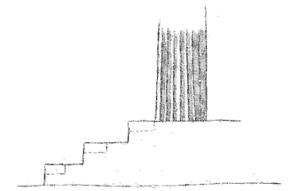Die Basen der ältesten Tempel waren Stufen; diese Gebäude waren rings herum zugängig. Nur daß diese Stufen proportionierlich zum Gebäude in den ältern Zeiten so hoch waren, daß der Mensch sie nicht erschreiten konnte; es wurden also an der Vorderseite der Tempel diese hohen Absätze nochmals durch kleinere Stufen durchschnitten.
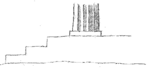Bei andern Tempeln waren die Stufen ringsum von dem Maße, daß man hinaufsteigen konnte.
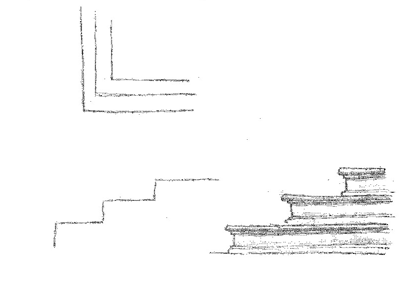Der Auftritt der Stufen hatte einen scharfen Winkel; die vorspringenden Glieder an denselben kommen erst zu Augusts Zeiten vor. Wenn die Tempel so zu stehen kamen daß sie nur von der Vorderseite gesehen wurden; oder daß sie von der Art waren die man in Antis nennt, ward die Base vorgerückt und zwischen derselben ging die Treppe hinauf.
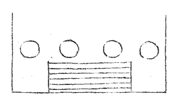Es kommt auch ein Fall vor, wo einige Stufen zwischen den Säulen selbst hinauf gehen, wie bei dem Tempel zu Assisi der Fall; ich glaube aber daß man es nur aus Notwendigkeit getan, weil der Tempel an dem Berg liegt und kein Platz zu einer vorliegenden Treppe war. Es wäre zu untersuchen ob mehr solche Fälle vorkommen und ob der Text des Vitruvs den Galiani berechtigt die Grund- und Aufrisse der dorischen Tempel wie sie Tab. V vorgestellt sind, zu entwerfen.
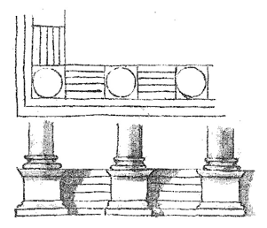Auf diese Weise scheinen die Säulen auf Piedestalen zu stehen; allein sie stehen wirklich auf dem Boden der Vorhalle der durch die Treppe nur eingeschnitten ist.
Paladio muß daher die Tempel nur aus Hörensagen gezeichnet haben wie die Vergleichung desselben Lib. IV Cap. 26. und Monumenti antiqui inediti fürs Jahr 1786 Fol. 20 überzeugen kann.
Fragt sich wann kommen zuerst Säulen auf völlig freistehenden Piedestalen vor.
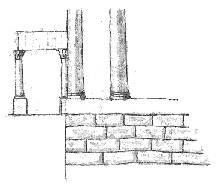Piedestale als Vorsprünge der Basen im Fall wo keine Stufen vorkommen Palladio Lib. IV Cap. 29.
Der Übergang sind offenbar durchschnittene Basen Palladio Lib. IV Cap. 25 wo man deutlich dedutieren kann, wie der Architekt, der ohne dies gewiß nicht sehr gewissenhaft war zu dieser Art von Piedestal ist genötiget worden.
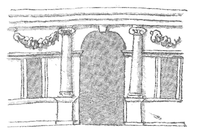So hat auch Palladio bei Stadtgebäuden, wo er Freiheit hatte, immer gehandelt.
Fragt sich ob wirklich freistehende Piedestale von ihm sich finden; gewöhnlich hat er sie nur als Vorsprünge der Basen angebracht.
Bei Landhäusern, wo er größere Freiheit hatte, finden sie sich ein einziges mal aber doch als idealische Kontinuation einer Base; die nähern Umstände des Lokals und der Bestimmung wird die Ursache dieser Abweichung zeigen und an keiner seiner ernsthaften Anlagen findet sich nur eine Spur davon.
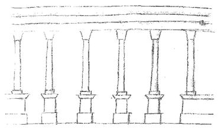In oben erwähnten Fällen ließ er gern in der Höhe des Säulenfußes einen Zockel um das Gebäude herumlaufen um immer auf eine gewisse horizontale Folge hinzudeuten.
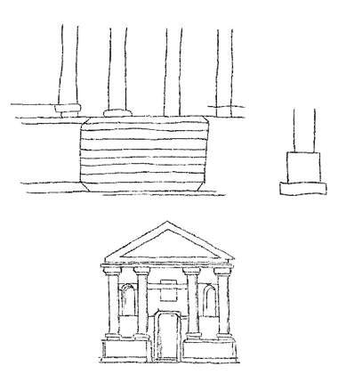 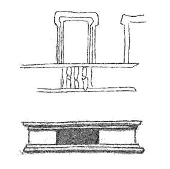
[An Gabriel Johannes Schleusner]
Hier schicke ich, wertester Herr Doktor, einen kleinen Aufsatz über die Grundlage zu einer architektonischen Bibliothek, wie ich ihn heute früh diktiert habe, er enthält freilich zu wenig und zu viel. Wenigstens aber wird Ihren Korrespondenten keines dieser Bücher angeschafft zu haben reuen. Wir sprechen darüber, und es läßt sich wohl noch manches zweckmäßig in der Kürze hinzutun, und man kann, wenn man nur erst sieht wo Ihr Korrespondent hinauswill, nach und nach, mehr darauf bauen. Ich wünsche recht wohl zu leben und hoffe Sie heute Abend zu sehen.
Jena am 22. Febr. 1797.
Goethe.
Die Anfrage Ihres H[errn] Korrespondenten, wertester Herr Doktor, deutet auf eine Lücke in der Kunstliteratur, dergleichen sich leider noch mehrere finden mögen; ein Buch wie er es wünscht ist nicht geschrieben und ist auch sobald noch nicht denkbar. Um ein Bücherverzeichnis aufzusetzen aus welchem sich eine Kunst mit Zeitersparnis studieren ließe, müßte man mit sich und anderen schon über die Methode, und also gewissermaßen über die Theorie einig sein, das ist hier nun leider keineswegs der Fall, und jeder Liebhaber und Künstler muß zu seinem großen, oft unersetzlichen Nachteil, den Weg einer halb raisonnierten Empirie gehen und sich in den Irrgarten hinein und heraus finden so gut er kann. Da dies aber der Fall mit mehr andern hochgepriesenen Wissenschaften ist, so wollen wir uns darein ergeben und Ihrem Herrn Korrespondenten wenigstens unsern guten Willen zeigen.
Das wünschenswerteste wäre freilich daß der Liebhaber, der sich ausbilden will, die Gebäude selbst am Platze sähe, um nicht allein ihre architektonischen, sondern auch ihre optischen Verhältnisse kennen zu lernen. Ein verständig gewählter oder geschaffener Ort ist der Hauptvorteil eines Gebäudes und die wirkliche Größe des Kunstwerks ist eine unerläßliche Forderung wenn es wirken soll.
Will man aus Büchern sich entweder zu dieser Anschauung vorbereiten, oder sie im Gedächtnis wieder auffrischen, und sich mit den äußeren Gesetzen der Kunst bekannt machen, so wird man wohltun eine Bibliothek um sich zu versammeln, die uns mit der Geschichte der Baukunst nach und nach bekannt macht. Zu diesem Studio ist im allgemeinen Doktor Stieglitzens Geschichte der Baukunst ein recht brauchbares Werk.
Die Entdeckung und nähere Bekanntmachung der älteren griechischen Monumente, in groß Griechenland, Sicilien und dem eigentlichen Griechenland, hat viel Einfluß auf unsere Begriffe von der Baukunst gehabt, und diese Muster wirken auch schon stark auf die Ausübung, indessen ist mir kein Lehrbuch bekannt, wo sie an der Stelle die ihnen gebührt aufgeführt wären, da alle bisherigen ältern Schriften dieser Art, dem von Vitruv eingeschlagenen Weg gefolgt sind. Ein wahrer Liebhaber der Kunst kann daher diejenigen Bücher, worin diese Monumente aufgestellt sind, nicht entbehren und es wären daher folgende vor allen Dingen anzuschaffen.
Le Roi Reise nach Griechenland.
Die Ruinen von Pestum.
Die Altertümer von Athen.
Houels Reise durch Sicilien.
St. Non Reise durch Sicilien.
In diesen Werken kann man den reinen großen und soliden Styl kennen lernen, in welchem jene glücklichen Menschen arbeiteten, obgleich auch manches spätere darinne vorkommt, das der gute Geschmack abzusondern hat.
Houels Werk macht uns besonders anschaulich, wie jenes kluge Volk in den Mitteln zu seinen großen Zwecken haushälterisch gewesen, wie sie Felsen und Berge nicht allein als Fundament sondern auch als Teil des Gebäudes benutzt, der rohen Masse in ihrer Naturlage eine bequeme und schöne Form gegeben, und durch die Kunst das Fehlende nur gleichsam suppliert, wie sie die Aussichten herrlich genutzt und was sonst noch alles zu ihrem Ruhm gereichen mag.
Von römischen Altertümern ist eine Menge gestochen und herausgegeben. Im vorigen Jahrhundert arbeiteten verschiedene Künstler an solchen Werken, die in dem Verlag des de Rossi herauskamen, sie enthalten, außer den perspektivischen Ansichten, des gegenwärtigen Zustandes am untern Teil des Blattes kleine Grundrisse und Profile auch restaurierte Ansichten, sie sind recht gut und architektonisch zweckmäßig radiert.
Nolli und andere arbeiteten auf diesem Wege fort.
In dieser Schule bildete sich Piranese aus dessen Werken nur ein Teil herauszunehmen wäre, da er oft zu viel dem Effekt aufgeopfert. Sein Werk della Magnificenza di Roma ist für die Verzierung einzelner Glieder sehr schätzbar.
In der Mitte des 16ten Jahrhunderts stach Labacco verschiedene Monumente nebst ihren Teilen in Kupfer; wenn man das Original und gute Abdrücke erhalten kann so bleiben sie Muster der Behandlung dieser Gegenstände mit dem Grabstichel.
Vorerst würde ich einem Liebhaber anraten sich die Anciens edifices de Rome par Desgodez anzuschaffen.
Die Lehrbücher der verschiedenen Meister, aus dem 15ten und 16ten Jahrhundert, kann man nicht entbehren, sie enthalten Ausmessungen der alten Monumente, Abbildungen der vorzüglichen Gebäude, welche jeder Meister aufführte, oder entwarf, und jeder stellt nach seiner Art die Grundsätze der Kunst auf, wobei sie alle den Vitruv im Auge hatten, von dem die neueste deutsche Übersetzung von Rode in Dessau anzuschaffen ist.
Serlios Werk ist in mehreren Teilen sehr brauchbar, besonders sind seine Substruktionen, seine Rustika und dergl. sehr zweckmäßig und gut und wenn man von seinen übrigen Aufrissen eine gewisse falsche Art von Verzierung wegdenkt, so liegen meist gute Verhältnisse zum Grunde.
Palladio ist geistreich und gratios und wohl in schicklicher Anwendung architektonischer Fiktionen der erste; sein Werk über die Baukunst ist um so merkwürdiger da es auch Risse von Gebäuden enthält, die nicht fertig geworden sind, worunter das Kloster della Carita in Venedig gehört, welches er nach dem Muster eines antiken Gebäudes, wie uns die Beschreibung davon durch Vitruv überliefert ist, aufführen wollte und das, dem Risse und dem fertig gewordenen Teile nach, gewiß eines der merkwürdigsten Gebäude der neuen Welt geworden wäre. So ist auch sein Vorschlag zum Ponte Rialto außerordentlich schön und die jetzige Ausführung dagegen nicht zu vergleichen. Auch kann man aus diesem Werke seine vorzüglichsten Vicentinischen Gebäude kennen lernen. Diese sind jedoch nachher teils in kleinerem, teils in größerem Format, mit vieler Sorgfalt und Aufwand herausgegeben worden. Auch existiert ein Band seiner Kirchen und ein Band antiker Bäder von ihm. Seine Gebäude haben in der Lombardei das Übergewicht. Seine Ausmessungen und Zeichnungen antiker Gebäude sind nicht immer richtig.
Scamozzis Werk ist das vollständigste, solideste und trefflichste das die Architektur aufzuweisen hat, dieses Werk allein genugsam durchzustudieren würde einen Freund der Kunst schon weit genug bringen. Das wenige was ihm an der Methode fehlen möchte, weiß ein guter Kopf leicht zu ersetzen.
Aus diesen drei Büchern kann man auch kennen lernen was in Venedig für eine Bauart geliebt worden sei.
Die Florentiner schlugen sich lange mit dem Gespenste des gotischen Geschmacks herum, und entfernten es nur mit Mühe, bis sie sich auch zur edlen Einfalt erhoben. Dem Bruneleski hängt immer noch etwas Gotisches an, dann kommt der zierliche Alberti, der solide Michelozzo, endlich Cronaca dessen Kirche S. Francesco in Monte wegen Simplizität, Adel und angemessener Zierraten rühm würdig ist. Die bürgerlichen Häuser bauten die Florentiner so wie die Sieneser anfangs in einem sehr schweren Geschmack, sie sehen Festungen und Staatsgefängnissen gleich. Ich will mich nach einem Werk erkundigen aus dem man diese neuere Toskanische Bauart sich bekannt machen kann.
Vignola ist ein sehr angenehmer und geniereicher Baukünstler, wenn er gleich in einigen Sachen schon zu weit geht. Sein Werk muß mit Beurteilung gebraucht und gelesen werden. Man hat einzelne Gebäude desselben, das Schloß zu Caprarola, das Lusthaus Papa Julia, die kleine Kirche die vor der Porta del Populo steht, mit allen deren Teilen in Kupfer gebracht, die ein Liebhaber der Kunst besitzen sollte.
Um sich von den römischen neueren Gebäuden im allgemeinen einen Begriff zu machen, kann man den Teil der Santratischen Akademie der sie enthält, sehr gut nutzen. Besonders finden sich einige von Bramante, die sehr merkwürdig sind.
Man fängt jetzt in Rom an wieder aufs neue, sowohl Grundrisse, als Profile und Aufrisse, der merkwürdigsten neueren Gebäude herauszugeben, wovon ich mir viel Gutes verspreche.
Die Geschichte der Erbauung der Peterskirche, der verschiedenen Vorschläge, Risse und Modelle, ist eines eigenen Studiums wert, wie denn auch ein eigenes Werk darüber existiert.
Weinlichs Briefe über Rom sind ein sehr gutes Buch, das ein Liebhaber nicht entbehren kann.
Von französischen Schriften wollte ich nur vorerst das Werk des Franz Blondel empfehlen. Es ist manches daraus zu lernen und gibt Gelegenheit, da er hier und da mit einem gewissen skeptischen Raisonnement, das sich in die Beurteilung der Kunst einschleichen wollte, polemisiert, auch diese Vorstellungsart, die sich von Zeit zu Zeit in Künsten wieder sehen läßt näher kennen zu lernen.
Des Abbé Laugier Werk über die Baukunst sollte ein Freund der Kunst auch kennen, seine Grundsätze leiten auf einen guten Weg, sind aber zu einseitig und ihre Anwendung muß beurteilt und geprüft werden.
Wenn man auf die Muster des sinkenden Geschmacks auch einiges Geld verschwenden will, so wären die Ruinen von Palmyra und die Altertümer von Spalatro, die Clerisseau herausgegeben hat, anzuschaffen.
Mit den ägyptischen Altertümern mache man sich, aus Reisebeschreibungen, mit so wenig Kosten als möglich bekannt.
Dieses wäre wertester Herr Doktor was ich aus dem Stegreife und aus dem Gedächtnis niederschreibe. Die ausführlichen Titel der Werke will ich hinzusetzen sobald ich wieder nach Weimar komme, wo sich die meisten befinden.
Ich wünsche daß dieser unvollkommene Aufsatz Ihrem Herrn Korrespondenten nützlich sein und ihm Anlaß geben möge uns seine Bedürfnisse näher anzugeben, ich werde mit Vergnügen das weitere, was mir bekannt ist, mitteilen.
Jena den 22ten Febr. 1797
G
König Rorig von Dännemark setzt Horvendill und Fengo an die Stelle ihres Vaters als Gouverneur von Juitland.
Ersterer macht sich durch Seeräuberei berühmt, er trifft auf einer Insel von ohngefähr mit dem Könige von Norwegen Coller zusammen.
Dieser kommt in einem Zweikampfe um und wird von seinem Überwinder nach einem wechselseitigen Versprechen feierlich begraben.
Nach drei Jahren überbringt er herrliche Geschenke dem Rorig dessen Gunst er so sehr erwirbt daß er ihm seine Schwester Geruda zum Weibe gibt mit der er den Amlet erzeugt.
Fengo beneidet seinen Bruder und bringt ihn um und beredet seine Gattin ihn zu heiraten.
Amlet stellt sich narrisch.
Legt sich an dem Herd in die Asche.
Sucht die Hölzer aus welche Haken haben. Spitzt sie und härtet sie beim Feuer.
Als man ihm fragt was er mache, antwortet er: daß er Pfeile, den Tod seines Vaters zu rächen, schnitze; einige lachen klügern scheint es verdächtig. Man denkt ihn durch ein Mädchen zu versuchen, sie soll ihn reizen und ihm sein Geheimnis ablocken.
Es soll ganz zufällig geschehen. Man schickt ihn mit jugendlicher Gesellschaft zu Pferde weit in die Welt, er setzt sich umgekehrt zu Pferde und nimmt den Schwanz statt des Zaums in die Hand; als ihm ein Wolf begegnet sagen seine Gespielen spottend hier laufe noch ein Pferd. Mein Vater hat nicht viele dergleichen unter seiner Reuterei sagte der Prinz; das redet ihr klug sagten die andern; ich sag es mit Fleiß versetzte der Prinz. Unter der übelgesinnten Schar die ihn begleitete war auch ein Milchbruder der ihm sehr geneigt war; dieser sann auf Mittel den Prinzen zu warnen daß er sich nicht verriet wenn er ja klug wäre.
Sie finden das Steuerruder eines gescheiderten Schiffes.
Sie zeigen ihm die Dünen als Mehl.
Sie lassen ihn in dem einsamen Walde, er findet eine Jugendgespielin, sein Freund schickt ihm einen Käfer mit einem Strohhalm. Er geht mit dem Mädchen weiter nach dem See, sie erinnern sich ihrer alten Liebe sie versprechen einander das Geheimnis und vergnügen sich zusammen.
Sie kommen zurück er gesteht den Liebeshandel und als sie ihn nach dem Hochzeitbette fragen sagt er, es habe aus Pferdehuf einem Hahnkamm und Dachbalken bestanden; man lacht ihn aus aber es war strenge Wahrheit denn er hatte von allen diesen Dingen etwas mit sich genommen.
Man fragt das Mädchen, sie leugnet aber und erzählt wie ungeschickt er sich benommen habe, darauf sagte sein Milchbruder, bin ich nicht aber euer bester Freund; ja versetzte Amlet, ihr habt mir einen Boten mit einem Strohschwanze durch die Luft geschickt; alle lachten und die beiden verstanden sich.
Ein Hofmann ersinnt ein anderes Mittel, der König soll sich entfernen, man soll den Prinzen zu seiner Mutter bringen gegen die er sich wohl nicht verstellen werde; der Vorschlag wird angenommen, der Erfinder versteckt sich unter einer Decke auf einem Polstersitz.
Amlet, ehe er mit seiner Mutter spricht, will untersuchen ob er nicht behorcht wird; er schlägt mit den Armen wie mit Flügeln, kräht wie ein Hahn springt auf den Sitz und da er den Horcher zu seinen Füßen fühlt durchsticht er ihn forschend mit dem Degen; er schleppt ihn fort, zerschneidet und kocht ihn und schüttet ihn durch eine Gosse auf den Mist wo die Schweine den Körper verzehren. Er kehrt zur Mutter zurück, schärft ihr das Gewissen und die Gewalt seiner Worte bringt sie zum Schweigen. Fengo kommt zurück findet seinen Forscher nirgends, Amlet wird zum Scherze gefragt. Er antwortet, der Mann sei durch die Gosse auf den Mist gefallen und habe die Schweine gefüttert.
Fengo wird immer mißtrauischer nur wagt er es nicht aus Furcht für den Großvater und der Mutter den Amlet zu töten. Er beschließt ihn zu dem Könige von England zu schicken und ihm die Ermordung Amlets aufzutragen.
Eh dieser weggeht verlangt er von seiner Mutter sie solle genau über ein Jahr den Palast mit schwarzen Teppichen behängen und zum Schein sein Todenfest feiern.
Zwei Kreaturen des Fengo begleiten ihn; ihre Aufträge sind auf hölzerne Tafeln geschnitten welche Amlet findet, sie verfälscht so daß er den Tod auf jene wälzt und für sich des Königs von England Tochter als Braut erbittet.
Sie kommen nach England die Gesandten übergeben ihre Aufträge, der König dissimuliert und nimmt die Fremden sämtlich an Tafel.
Bei dem herrlichen Mahle rührt Amlet weder Speise noch Trank an; als sie sich zur Ruhe begeben schickt der König jemand der sie behorchen soll; Amlet wird von seinen Gesellen gefragt warum er sich von den gestrigen Speisen enthalten habe, er antwortet das Brot habe nach Blut geschmeckt der Trank nach Eisen und das Fleisch habe einen Leichengeruch gehabt.
Man schalt ihn daß er übels von einem so guten Mahle spreche; er sagte darauf: mit den Wirt und Wirtin sei es nicht besser bestellt, der König habe was knechtisches im Blick und die Königin habe sich dreimal wie eine Magd betragen.
Als der König das von seinem Horcher erfuhr sagte er: dieser Mann müsse entweder übermenschliche Weisheit besitzen oder Toll sein; darauf ließ er den Bauern kommen denn das Brot war im Hause gebacken worden um zu erfahren auf welchem Boden die Saat gewachsen sei: Auf einem alten Schlachtfelde sagte der Mann, das noch voller Knochen liegt und das ich weil es besonders gute Früchte bringt besonders für euren Hof gesät habe. Der König erstaunt über des Amlets feinen Geschmack läßt er den Hirten kommen aus dessen Herde das aufgesetzte Schwein genommen war; dieser bekennt daß die Tiere einen Toten und halbfaulen Räuber gefressen hätten; nun blieb noch übrig den Trank zu untersuchen; er war mit Wasser gemischt, man gräbt der Quelle nach und findet daß sie über verrostete Schwerte fließt.
Inhalt
Kunst und Naturwerke sind unaussprechlich – Bei einem trefflichen Kunstwerke ist nötig, von der ganzen Kunst zu reden – Beschäftigung der hohen Künste mit dem Menschen – Erfordernisse eines hohen Kunstwerks – Organisation und Leben – Charakter – Ruhe oder Bewegung – Ideal – Anmut – Schönheit – Laokoon erfüllt jene Bedingungen – Geschlossenheit des Gegenstandes – Entkleidung von allem Fremden – Darstellung des Moments – Zustand der drei Figuren – Stellung des Vaters aus physischer Ursache erklärt – Geistige Einwirkung – Die sämtlichen Teile der Gruppe – Doppelte Handlung aller Figuren – Gipfel des Moments – Augenblick nachher – Allgemeine Betrachtung und Wiederholung – Verhältnis des Gegenstandes zur Poesie.
Ein echtes Kunstwerk bleibt, wie ein Naturwerk, für unsern Verstand immer unendlich; es wird angeschaut, empfunden; es wirkt, es kann aber nicht eigentlich erkannt, vielweniger sein Wesen, sein Verdienst mit Worten ausgesprochen werden. Was also hier über Laokoon gesagt ist, hat keinesweges die Anmaßung diesen Gegenstand zu erschöpfen, es ist mehr bei Gelegenheit dieses trefflichen Kunstwerks als über dasselbe geschrieben. Möge dieses bald wieder so aufgestellt sein, daß jeder Liebhaber sich daran freuen und darüber nach seiner Art reden könne.
Wenn man von einem trefflichen Kunstwerke sprechen will, so ist es fast nötig von der ganzen Kunst zu reden, denn es enthält sie ganz, und jeder kann, soviel in seinen Kräften steht, auch das Allgemeine aus einem solchen besondern Fall entwickeln; deswegen sei hier auch etwas Allgemeines vorausgeschickt.
Alle hohe Kunstwerke stellen die menschliche Natur dar, die bildenden Künste beschäftigen sich besonders mit dem menschlichen Körper; wir reden gegenwärtig nur von diesen. Die Kunst hat viele Stufen, auf jeder derselben können vorzügliche Künstler erscheinen, ein vollkommenes Kunstwerk aber begreift alle Eigenschaften, die sonst nur einzeln ausgeteilt sind.
Die höchsten Kunstwerke, die wir kennen, zeigen uns:
Lebendige, hochorganisierte Naturen. Man erwartet vor allem Kenntnis des menschlichen Körpers in seinen Teilen, Maßen, innern und äußern Zwecken, Formen und Bewegungen im allgemeinen.
Charaktere. Kenntnis des Abweichens dieser Teile in Gestalt und Wirkung. Eigenschaften sondern sich ab und stellen sich einzeln dar; hierdurch entstehen die Charaktere, und es können die verschiedenen Kunstwerke dadurch in ein bedeutendes Verhältnis gegen einander gebracht werden, so wie auch, wenn ein Werk zusammengesetzt ist, seine Teile sich bedeutend gegen einander verhalten können. Der Gegenstand ist:
In Ruhe oder Bewegung. Ein Werk oder seine Teile können entweder für sich bestehend, ruhig ihr bloßes Dasein anzeigend, oder auch bewegt, wirkend, leidenschaftlich ausdrucksvoll dargestellt werden.
Ideal. Um hierzu zu gelangen, bedarf der Künstler eines tiefen, gründlichen, ausdauernden Sinnes, zu dem aber noch ein hoher Sinn sich gesellen muß, um den Gegenstand in seinem ganzen Umfange zu übersehen, den höchsten darzustellenden Moment zu finden, und ihn also aus seiner beschränkten Wirklichkeit herauszuheben, und ihm in einer idealen Welt Maß, Grenze, Realität und Würde zu geben.
Anmut. Der Gegenstand aber und die Art ihn vorzustellen, sind den sinnlichen Kunstgesetzen unterworfen, nämlich der Ordnung, Faßlichkeit, Symmetrie, Gegenstellung etc. wodurch er für das Auge schön, das heißt, anmutig wird.
Schönheit. Ferner ist er dem Gesetz der geistigen Schönheit unterworfen, die durch das Maß entsteht, welchem der, zur Darstellung oder Hervorbringung des Schönen, gebildete Mensch alles, sogar die Extreme, zu unterwerfen weiß.
Nachdem ich die Bedingungen, welche wir von einem hohen Kunstwerke fodern, zum voraus angegeben habe, so kann ich mit wenigen Worten viel sagen, wenn ich behaupte, daß unsere Gruppe sie alle erfüllt, ja daß man sie aus derselben allein entwickeln könne.
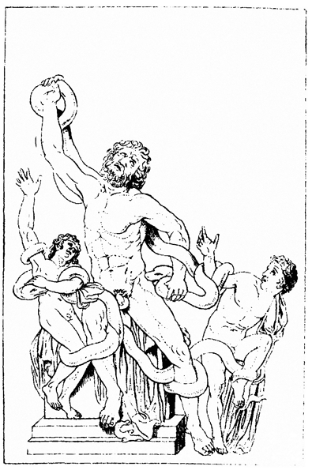Conrad Horny (?)
Laokoon-Gruppe
Wohl nach Weimarer Abguß mit
alten Ergänzungen (so Goethe bekannt)
Kupferstich, um 1797
Johann Christian Ernst (?) Müller
Man wird mir den Beweis erlassen, daß sie Kenntnis des menschlichen Körpers, daß sie das charakteristische an demselben, so wie Ausdruck und Leidenschaft zeige. Wie hoch und ideal der Gegenstand gefaßt sei, wird sich aus dem folgenden ergeben; daß man das Werk schön nennen müsse, wird wohl niemand bezweifeln, welcher das Maß erkennt, womit das Extrem eines physischen und geistigen Leidens hier dargestellt ist.
Hingegen wird manchem paradox scheinen, wenn ich behaupte, daß diese Gruppe auch zugleich anmutig sei. Hierüber also nur einige Worte.
Jedes Kunstwerk muß sich als ein solches anzeigen, und das kann es allein durch das, was wir sinnliche Schönheit oder Anmut nennen. Die Alten, weit entfernt von dem modernen Wahne, daß ein Kunstwerk dem Scheine nach wieder ein Naturwerk werden müsse, bezeichneten ihre Kunstwerke als solche, durch gewählte Ordnung der Teile, sie erleichterten dem Auge die Einsicht in die Verhältnisse durch Symmetrie, und so ward ein verwickeltes Werk faßlich. Durch eben diese Symmetrie und durch Gegenstellungen wurden in leisen Abweichungen die höchsten Kontraste möglich. Die Sorgfalt der Künstler, mannigfaltige Massen gegen einander zu stellen, besonders die Extremitäten der Körper bei Gruppen gegen einander in eine regelmäßige Lage zu bringen, war äußerst überlegt und glücklich, so daß ein jedes Kunstwerk, wenn man auch von dem Inhalt abstrahiert, wenn man in der Entfernung auch nur die allgemeinsten Umrisse sieht, noch immer dem Auge als ein Zierrat erscheint. Die alten Vasen geben uns hundert Beispiele einer solchen anmutigen Gruppierung, und es würde vielleicht möglich sein, stufenweise von der ruhigsten Vasengruppe bis zu der höchst bewegten des Laokoons, die schönsten Beispiele einer symmetrisch künstlichen, den Augen gefälligen Zusammensetzung, darzulegen. Ich getraue mir daher nochmals zu wiederholen: daß die Gruppe des Laokoons, neben allen übrigen anerkannten Verdiensten, zugleich ein Muster sei von Symmetrie und Mannigfaltigkeit, von Ruhe und Bewegung, von Gegensätzen und Stufengängen, die sich zusammen, teils sinnlich teils geistig, dem Beschauer darbieten, bei dem hohen Pathos der Vorstellung eine angenehme Empfindung erregen, und den Sturm der Leiden und Leidenschaft durch Anmut und Schönheit mildern.
Es ist ein großer Vorteil für ein Kunstwerk, wenn es selbstständig, wenn es geschlossen ist. Ein ruhiger Gegenstand zeigt sich bloß in seinem Dasein, er ist also durch und in sich selbst geschlossen. Ein Jupiter mit einem Donnerkeil im Schoß, eine Juno, die auf ihrer Majestät und Frauenwürde ruht, eine in sich versenkte Minerva, sind Gegenstände, die gleichsam nach außen keine Beziehung haben; sie ruhen auf und in sich und sind die ersten, liebsten Gegenstände der Bildhauerkunst. Aber in dem herrlichen Zirkel des mythischen Kunstkreises, in welchem diese einzelnen selbstständigen Naturen stehen und ruhen, gibt es kleinere Zirkel, wo die einzelnen Gestalten in Bezug auf andere gedacht und gearbeitet sind, z. E. die neun Musen, mit ihrem Führer Apoll, ist jede für sich gedacht und ausgeführt, aber in dem ganzen mannigfaltigen Chor wird sie noch interessanter. Geht die Kunst zum leidenschaftlich bedeutenden über, so kann sie wieder auf dieselbe Weise handeln; sie stellt uns entweder einen Kreis von Gestalten dar, die unter einander einen leidenschaftlichen Bezug haben, wie Niobe mit ihren Kindern, verfolgt von Apoll und Diana; oder sie zeigt uns in Einem Werke die Bewegung zugleich mit ihrer Ursache. Wir gedenken hier nur des anmutigen Knaben, der sich den Dorn aus dem Fuße zieht, der Ringer, zweier Gruppen von Faunen und Nymphen in Dresden, und der bewegten herrlichen Gruppe des Laokoons.
Die Bildhauerkunst wird mit Recht so hoch gehalten, weil sie die Darstellung auf ihren höchsten Gipfel bringen kann und muß, weil sie den Menschen von allem, was ihm nicht wesentlich ist, entblößt. Sie ist auch bei dieser Gruppe, Laokoon ein bloßer Name; von seiner Priesterschaft, von seinem trojanisch-nationellen, von allem poetischen und mythologischen Beiwesen haben ihn die Künstler entkleidet, er ist nichts von allem, wozu ihn die Fabel macht, es ist ein Vater mit zwei Söhnen, in Gefahr zwei gefährlichen Tieren unterzuliegen. So sind auch hier keine göttergesandte, sondern bloß natürliche Schlangen, mächtig genug einige Menschen zu überwältigen, aber keineswegs, weder in ihrer Gestalt noch Handlung, außerordentliche, rächende, strafende Wesen, Ihrer Natur gemäß schleichen sie heran, umschlingen, schnüren zusammen, und die eine beißt erst gereizt. Sollte ich diese Gruppe, wenn mir keine weitere Deutung derselben bekannt wäre, erklären; so würde ich sie eine tragische Idylle nennen. Ein Vater schlief neben seinen beiden Söhnen, sie wurden von Schlangen umwunden und streben nun erwachend, sich aus dem lebendigen Netze loszureißen.
Äußerst wichtig ist dieses Kunstwerk durch die Darstellung des Moments. Wenn ein Werk der bildenden Kunst sich wirklich vor dem Auge bewegen soll, so muß ein vorübergehender Moment gewählt sein; kurz vorher darf kein Teil des Ganzen sich in dieser Lage befunden haben, kurz hernach muß jeder Teil genötigt sein, diese Lage zu verlassen, dadurch wird das Werk Millionen Anschauern immer wieder neu lebendig sein.
Um die Intention des Laokoons recht zu fassen, stelle man sich in gehöriger Entfernung, mit geschlossnen Augen, davor, man öffne sie und schließe sie sogleich wieder, so wird man den ganzen Marmor in Bewegung sehen, man wird fürchten, indem man die Augen wieder öffnet, die ganze Gruppe verändert zu finden. Ich möchte sagen, wie sie jetzt dasteht, ist sie ein fixierter Blitz, eine Welle, versteinert im Augenblicke da sie gegen das Ufer anströmt. Dieselbe Wirkung entsteht, wenn man die Gruppe Nachts bei der Fackel sieht.
Der Zustand der drei Figuren ist mit der höchsten Weisheit stufenweise dargestellt, der älteste Sohn ist nur an den Extremitäten verstrickt, der zweite öfters umwunden, besonders ist ihm die Brust zusammengeschnürt, durch die Bewegung des rechten Arms sucht er sich Luft zu machen, mit der linken drängt er sanft den Kopf der Schlange zurück, um sie abzuhalten, daß sie nicht noch einen Ring um die Brust ziehe, sie ist im Begriff unter der Hand wegzuschlüpfen, keinesweges aber beißt sie. Der Vater hingegen will sich und die Kinder von diesen Umstrickungen mit Gewalt befreien, er preßt die andere Schlange, und diese, gereizt, beißt ihn in die Hüfte.
Um die Stellung des Vaters sowohl im Ganzen als nach allen Teilen des Körpers, zu erklären, scheint es mir am vorteilhaftesten, das augenblickliche Gefühl der Wunde als die Hauptursache der ganzen Bewegung anzugeben. Die Schlange hat nicht gebissen, sondern sie beißt, und zwar in den weichen Teil des Körpers, über und etwas hinter der Hüfte. Die Stellung des restaurierten Kopfes der Schlange hat den eigentlichen Biß nie recht angegeben, glücklicherweise haben sich noch die Reste der beiden Kinnladen, an dem hintern Teil der Statue erhalten, wenn nur nicht diese höchst wichtigen Spuren bei der jetzigen traurigen Veränderung auch verloren gehen! Die Schlange bringt dem unglücklichen Manne eine Wunde an dem Teile bei, wo der Mensch gegen jeden Reiz sehr empfindlich ist, wo sogar ein geringer Kitzel jene Bewegung hervorbringt, welche wir hier durch die Wunde bewirkt sehen: der Körper flieht auf die entgegengesetzte Seite, der Leib zieht sich ein, die Schulter drängt sich herunter, die Brust tritt hervor, der Kopf senkt sich nach der berührten Seite; da sich nun noch in den Füßen, die gefesselt, und in den Armen, die ringend sind, der Überrest der vorhergehenden Situation oder Handlung zeigt, so entsteht eine Zusammenwirkung von Streben und Fliehen, von Wirken und Leiden, von Anstrengen und Nachgeben, die vielleicht unter keiner andern Bedingung möglich wäre. Man verliert sich in Erstaunen über die Weisheit der Künstler, wenn man versucht den Biß an einer andern Stelle anzubringen, die ganze Gebärde würde verändert sein, und auf keine Weise ist sie schicklicher denklich. Es ist also dieses ein Hauptsatz: der Künstler hat uns eine sinnliche Wirkung dargestellt, er zeigt uns auch die sinnliche Ursache. Der Punkt des Bisses, ich wiederhole es, bestimmt die gegenwärtigen Bewegungen der Glieder; das Fliehen des Unterkörpers, das Einziehen des Leibes, das Hervorstreben der Brust, das Niederzucken der Achsel, und des Hauptes, ja alle die Züge des Angesichts seh ich durch diesen augenblicklichen, schmerzlichen, unerwarteten Reiz entschieden.
Fern aber sei es von mir, daß ich die Einheit der menschlichen Natur trennen, daß ich den geistigen Kräften dieses herrlich gebildeten Mannes ihr Mitwirken ableugnen, daß ich das Streben und Leiden einer großen Natur verkennen sollte. Angst, Furcht, Schrecken, väterliche Neigung scheinen auch mir sich durch diese Adern zu bewegen, in dieser Brust aufzusteigen, auf dieser Stirn sich zu furchen, gern gesteh ich, daß mit dem sinnlichen auch das geistige Leiden hier auf der höchsten Stufe dargestellt sei, nur trage man die Wirkung, die das Kunstwerk auf uns macht, nicht zu lebhaft auf das Werk selbst über, besonders sehe man keine Wirkung des Gifts, bei einem Körper, den erst im Augenblicke die Zähne der Schlange ergreifen, man sehe keinen Todeskampf bei einem herrlichen, strebenden, gesunden, kaum verwundeten Körper. Hier sei mir eine Bemerkung erlaubt, die für die bildende Kunst von Wichtigkeit ist; der höchste pathetische Ausdruck, den sie darstellen kann, schwebt auf dem Übergänge eines Zustandes in den andern. Man sehe ein lebhaftes Kind, das mit aller Energie und Lust des Lebens rennt, springt und sich ergötzt, dann aber etwa unverhofft von einem Gespielen hart getroffen oder sonst physisch oder moralisch heftig verletzt wird; diese neue Empfindung teilt sich wie ein elektrischer Schlag allen Gliedern mit, und ein solcher Übersprung ist im höchsten Sinne pathetisch, es ist ein Gegensatz, von dem man ohne Erfahrung keinen Begriff hat. Hier wirkt nun offenbar der geistige sowohl als der physische Mensch. Bleibt alsdann bei einem solchem Übergange noch die deutliche Spur vom vorhergehenden Zustande, so entsteht der herrlichste Gegenstand für die bildende Kunst, wie beim Laokoon der Fall ist, wo Streben und Leiden in Einem Augenblick vereinigt sind. So würde z. B. Euridice, die im Moment, da sie mit gesammelten Blumen fröhlich über die Wiese geht, von einer getretnen Schlange in die Ferse gebissen wird, eine sehr pathetische Statue machen, wenn nicht allein durch die herabfallenden Blumen, sondern durch die Richtung aller Glieder und das Schwanken der Falten, der doppelte Zustand des fröhlichen Vorschreitens und des schmerzlichen Anhaltens ausgedrückt werden könnte.
Wenn wir nun die Hauptfigur in diesem Sinne gefaßt haben, so können wir auf die Verhältnisse, Abstufungen und Gegensätze sämtlicher Teile des ganzen Werkes mit einem freien und sichern Blicke hinsehen.
Der gewählte Gegenstand ist einer der glücklichsten, die sich denken lassen. Menschen mit gefährlichen Tieren im Kampfe, und zwar mit Tieren, die nicht als Massen oder Gewalten, sondern als ausgeteilte Kräfte wirken, nicht von Einer Seite drohen, nicht einen zusammengefaßten Widerstand fordern, sondern die nach ihrer ausgedehnten Organisation fähig sind, drei Menschen, mehr oder weniger, ohne Verletzung zu paralisieren. Durch dieses Mittel der Lähmung wird, bei der großen Bewegung, über das Ganze schon eine gewisse Ruhe und Einheit verbreitet. Die Wirkungen der Schlangen sind stufenweise angegeben. Die eine umschlingt nur, die andre wird gereizt, und verletzt ihren Gegner. Die drei Menschen sind gleichfalls äußerst weise gewählt: Ein starker, wohlgebauter Mann, aber schon über die Jahre der größten Energie hinaus, weniger fähig Schmerz und Leiden zu widerstehen. Man denke sich an seiner Statt einen rüstigen Jüngling, und die Gruppe wird ihren ganzen Wert verlieren! Mit ihm leiden zwei Knaben, die, selbst dem Maße nach, gegen ihn klein gehalten sind; abermals zwei Naturen empfänglich für Schmerz.
Der Jüngere strebt ohnmächtig, er ist geängstigt aber nicht verletzt; der Vater strebt mächtig aber unwirksam, vielmehr bringt sein Streben die entgegengesetzte Wirkung hervor. Er reizt seinen Gegner und wird verwundet. Der älteste Sohn ist am leichtesten verstrickt; er fühlt weder Beklemmung noch Schmerz, er erschrickt über die augenblickliche Verwundung und Bewegung seines Vaters, er schreit auf, indem er das Schlangenende von dem einen Fuß abzustreifen sucht, hier ist also noch ein Beobachter, Zeuge und Teilnehmer bei der Tat, und das Werk ist abgeschlossen.
Was ich schon im Vorbeigehen berührt habe, will ich hier noch besonders bemerken: daß alle drei Figuren eine doppelte Handlung äußern, und so höchst mannigfaltig beschäftigt sind. Der jüngste Sohn will sich durch die Erhöhung des rechten Arms Luft machen, und drängt mit der linken Hand den Kopf der Schlange zurück, er will sich das gegenwärtige Übel erleichtern, und das größere verhindern; der höchste Grad von Tätigkeit, der ihm in seiner gefangenen Lage nach übrig bleibt. Der Vater strebt sich von den Schlangen loszuwinden, und der Körper flieht zugleich vor dem augenblicklichen Bisse. Der älteste Sohn entsetzt sich vor der Bewegung des Vaters, und sucht sich von der leicht umwindenden Schlange zu befreien.
Schon oben ist der Gipfel des vorgestellten Augenblicks als ein großer Vorzug dieses Kunstwerks gerühmt, und hier ist noch besonders davon zu sprechen.
Wir nahmen an, daß natürliche Schlangen einen Vater mit seinen Söhnen im Schlaf umwunden, damit wir bei Betrachtung der Momente eine Steigerung vor uns sähen. Die ersten Augenblicke des Umwindens im Schlafe sind ahndungsvoll, aber für die Kunst unbedeutend. Man könnte vielleicht einen schlafenden jungen Herkules bilden, wie er von Schlangen umwunden wird, dessen Gestalt und Ruhe uns aber zeigte, was wir von seinem Erwachen zu erwarten hätten.
Gehen wir nun weiter und denken uns den Vater, der sich mit seinen Kindern, es sei nun wie es sei, von Schlangen umwunden fühlt, so gibt es nur Einen Moment des höchsten Interesse: wenn der eine Körper durch die Umwindung wehrlos gemacht ist, wenn der andere zwar wehrhaft aber verletzt ist, und dem dritten eine Hoffnung zur Flucht übrig bleibt. In dem ersten Falle ist der jüngere Sohn, im zweiten der Vater, im dritten der ältere Sohn. Man versuche noch einen andern Fall zu finden! man suche die Rollen anders, als sie hier ausgeteilt sind, zu verteilen!
Denken wir nun die Handlung vom Anfang herauf und erkennen, daß sie gegenwärtig auf dem höchsten Punkt steht, so werden wir, wenn wir die nächstfolgenden und fernern Momente bedenken, sogleich gewahr werden, daß sich die ganze Gruppe verändern muß, und daß kein Augenblick gefunden werden kann, der diesem an Kunstwert gleich sei. Der jüngste Sohn wird entweder von der umwindenden Schlange erstickt, oder, wenn er sie reizen sollte, in seinem völlig hülflosen Zustande, noch gebissen. Beide Fälle sind unerträglich, weil sie ein letztes sind, das nicht dargestellt werden soll. Was den Vater betrifft, so wird er entweder von der Schlange noch an andern Teilen gebissen, wodurch die ganze Lage seines Körpers sich verändern muß, und die ersten Bisse für den Zuschauer entweder verloren gehen, oder wenn sie angezeigt werden sollten, ekelhaft sein würden; oder die Schlange kann auch sich umwenden, und den ältesten Sohn anfallen, dieser wird alsdann auf sich selbst zurückgeführt, die Begebenheit verliert ihren Teilnehmer, der letzte Schein von Hoffnung ist aus der Gruppe verschwunden, es ist keine tragische, es ist eine grausame Vorstellung. Der Vater, der jetzt in seiner Größe, und in seinem Leiden auf sich ruht, müßte sich gegen den Sohn wenden, er würde teilnehmende Nebenfigur.
Der Mensch hat bei eignen und fremden Leiden nur drei Empfindungen, Furcht, Schrecken, und Mitleiden, das bange Voraussehen eines sich annähernden Übels, das unerwartete Gewahrwerden gegenwärtigen Leidens und die Teilnahme am dauernden oder vergangenen, alle drei werden durch dieses Kunstwerk dargestellt und erregt und zwar in den gehörigsten Abstufungen.
Die bildende Kunst, die immer für den Moment arbeitet, wird, sobald sie einen pathetischen Gegenstand wählt, denjenigen ergreifen, der Schrecken erweckt, da hingegen Poesie sich an solche hält, die Furcht und Mitleiden erregen. Bei der Gruppe des Laokoons erregt das Leiden des Vaters Schrecken und zwar im höchsten Grad, an ihm hat die Bildhauerkunst ihr höchstes getan; allein, teils um den Zirkel aller menschlichen Empfindungen zu durchlaufen, teils um den heftigen Eindruck des Schreckens zu mildern, erregt sie Mitleiden für den Zustand des jüngern Sohns, und Furcht für den ältern, indem sie für diesen auch noch Hoffnung übrig läßt. So brachten die Künstler, durch Mannigfaltigkeit, ein gewisses Gleichgewicht in ihre Arbeit, milderten und erhöhten Wirkung durch Wirkungen, und vollendeten sowohl ein geistiges als ein sinnliches Ganze.
Genug wir dürfen kühnlich behaupten, daß dieses Kunstwerk seinen Gegenstand erschöpfe, und alle Kunstbedingungen glücklich erfülle. Es lehrt uns: daß, wenn der Meister sein Schönheitsgefühl ruhigen und einfachen Gegenständen einflößen kann, sich doch eigentlich dasselbe in seiner höchsten Energie und Würde zeige, wenn es bei Bildung mannigfaltiger Charaktere seine Kraft beweist, und die leidenschaftlichen Ausbrüche der menschlichen Natur, in der Kunstnachahmung, zu mäßigen und zu bändigen versteht. Wir geben in der Folge wohl eine genauere Beschreibung der Statuen, welche unter dem Namen der Familie der Niobe bekannt sind, so wie auch der Gruppe des farnesischen Stiers, sie gehören unter die wenigen pathetischen Darstellungen, welche uns von alter Skulptur übrig geblieben sind.
Gewöhnlich haben sich die Neuern bei der Wahl solcher Gegenstände vergriffen. Wenn Milo, mit beiden Händen in einer Baumspalte gefangen, von einem Löwen angefallen wird, so wird die Kunst sich vergebens bemühen, daraus ein Werk zu bilden, das eine reine Teilnahme erregen könnte. Ein doppelter Schmerz, eine vergebliche Anstrengung, ein hülfloser Zustand, ein gewisser Untergang können nur Abscheu erregen, wenn sie nicht ganz kalt lassen.
Und noch zuletzt nur noch ein Wort über das Verhältnis des Gegenstandes zur Poesie.
Man ist höchst ungerecht gegen Virgilen und die Dichtkunst, wenn man das geschlossenste Meisterwerk der Bildhauerarbeit, mit der episodischen Behandlung in der Aeneis, auch nur einen Augenblick vergleicht. Da einmal der unglückliche vertriebene Aeneas selbst erzählen soll, daß er und seine Landsleute die unverzeihliche Torheit begangen haben, das bekannte Pferd in ihre Stadt zu führen, so muß der Dichter nur darauf denken, wie die Handlung zu entschuldigen sei? Alles ist auch darauf angelegt, und die Geschichte des Laokoons steht hier als ein rhetorisches Argument, bei dem eine Übertreibung, wenn sie nur zweckmäßig ist, gar wohl gebilligt werden kann. So kommen ungeheure Schlangen aus dem Meere, mit Kämmen auf dem Haupte, eilen auf die Kinder des Priesters, der das Pferd verletzt hatte, umwickeln sie, beißen sie, begeifern sie; umwinden, umschlingen darauf Brust und Hals des zu Hülfe eilenden Vaters, und ragen mit ihren Köpfen triumphierend hoch empor, indem der Unglückliche unter ihren Windungen vergebens um Hülfe schreit. Das Volk entsetzt sich und flieht beim Anblick, niemand wagt es mehr ein Patriot zu sein, und der Zuhörer, durch die abenteuerliche und ekelhafte Geschichte erschreckt, gibt denn auch gern zu, daß das Pferd in die Stadt gebracht werde.
So steht also die Geschichte Laokoons im Virgil bloß als Mittel zu einem höhern Zwecke, und es ist noch eine große Frage, ob die Begebenheit an sich ein poetischer Gegenstand sei?
Die Sujets die er wählt sind sämtlich abenteuerlich und entweder tragisch oder humoristisch die ersten wirken auf Einbildungskraft und Gefühl die zweiten auf Einbildungskraft und Geist.
Die sinnliche Darstellung braucht er in beiden Fällen nur als Vehikel.
Kein echtes Kunstwerk soll auf Einbildungskraft wirken wollen das ist die Sache der Poesie.
Bei Füeslis sind Poesie und Malerei immer im Streit und sie lassen den Zuschauer niemals zum ruhigen Genuß kommen; man schätzt ihn als Dichter, und als bildender Künstler macht er den Zuschauer immer ungeduldig.
Naturell. Frühere Bildung. Italienische Einwirkung. Studien, welchen Weg er genommen. Manier in allem, besonders der Anatomie, dadurch auch der Stellungen. Malerisch, poetisches Genie. Charakteristisches. Gewisse Idiosynkrasien des Gefallens, der Liebhaberei. Mädchen in gewissen Formen. Lage. Wollüstige Hingelehntheit. Wirkung Shakespears. Des Jahrhunderts. Englands. Miltonische Galerie.
d. 9 Aug. 97
Ein Gespräch
Auf einem deutschen Theater ward ein ovales, gewissermaßen amphitheatralisches Gebäude vorgestellt, in dessen Logen viele Zuschauer gemalt sind, als wenn sie an dem, was unten vorgeht, Teil nähmen. Manche wirkliche Zuschauer im Parterre und in den Logen waren damit unzufrieden, und wollten übel nehmen, daß man ihnen so etwas unwahres und unwahrscheinliches aufzubinden gedächte. Bei dieser Gelegenheit fiel ein Gespräch vor, dessen ohngefährer Inhalt hier aufgezeichnet wird.
Der Anwalt des Künstlers. Lassen Sie uns sehen, ob wir uns nicht einander auf irgend einem Wege nähern können?
Der Zuschauer. Ich begreife nicht, wie Sie eine solche Vorstellung entschuldigen wollen.
Anwalt. Nicht wahr, wenn Sie ins Theater gehen, so erwarten Sie nicht, daß alles, was Sie drinnen sehen werden, wahr und wirklich sein soll?
Zuschauer. Nein! ich verlange aber, daß mir wenigstens alles wahr und wirklich scheinen solle.
Anwalt. Verzeihen Sie, wenn ich in Ihre eigne Seele leugne, und behaupte: Sie verlangen das keinesweges.
Zuschauer. Das wäre doch sonderbar! Wenn ich es nicht verlangte, warum gäbe sich denn der Dekorateur die Mühe, alle Linien aufs genaueste nach den Regeln der Perspektiv zu ziehen, alle Gegenstände nach der vollkommensten Haltung zu malen? warum studierte man aufs Kostüm? warum ließe man sich es soviel kosten ihm treu zu bleiben, um dadurch mich in jene Zeiten zu versetzen? Warum rühmt man den Schauspieler am meisten, der die Empfindungen am wahrsten ausdruckt, der in Rede, Stellung und Gebärden der Wahrheit am nächsten kommt, der mich täuscht, daß ich nicht eine Nachahmung sondern die Sache selbst zu sehen glaube?
Anwalt. Sie drücken Ihre Empfindungen recht gut aus, nur ist es schwerer als Sie vielleicht denken, recht deutlich einzusehen, was man empfindet. Was werden Sie sagen, wenn ich Ihnen einwende, daß Ihnen alle theatralische Darstellungen keinesweges wahr scheinen, daß Sie vielmehr nur einen Schein des Wahren haben?
Zuschauer. Ich werde sagen: daß Sie eine Subtilität vorbringen, die wohl nur ein Wortspiel sein könnte.
Anwalt. Und ich darf Ihnen darauf versetzen: daß, wenn wir von Wirkungen unsers Geistes reden, keine Worte zart und subtil genug sind, und daß Wortspiele dieser Art selbst ein Bedürfnis des Geistes anzeigen, der, da wir das, was in uns vorgeht, nicht geradezu ausdrücken können, durch Gegensätze zu operieren, die Frage von zwei Seiten zu beantworten, und so gleichsam die Sache in die Mitte zu fassen sucht.
Zuschauer. Gut denn! nur erklären Sie sich deutlicher, und, wenn ich bitten darf, in Beispielen.
Anwalt. Die werde ich leicht zu meinem Vorteil aufbringen können. Z. B. also wenn Sie in der Oper sind, empfinden Sie nicht ein lebhaftes vollständiges Vergnügen?
Zuschauer. Wenn alles wohl zusammenstimmt, eines der vollkommensten, deren ich mir bewußt bin.
Anwalt. Wenn aber die guten Leute da droben, singend sich begegnen und bekomplimentieren, Billets absingen die sie erhalten, ihre Liebe, ihren Haß, alle ihre Leidenschaften singend darlegen, sich singend herum schlagen, und singend verscheiden, können Sie sagen, daß die ganze Vorstellung, oder auch nur ein Teil derselben, wahr scheine? ja ich darf sagen auch nur einen Schein des Wahren habe?
Zuschauer. Fürwahr, wenn ich es überlege, so getraue ich mich das nicht zu sagen. Es kommt mir von allem dem freilich nichts wahr vor.
Anwalt. Und doch sind Sie dabei völlig vergnügt und zufrieden.
Zuschauer. Ohne Widerrede. Ich erinnre mich zwar noch wohl, wie man sonst die Oper, eben wegen ihrer groben Unwahrscheinlichkeit, lächerlich machen wollte, und wie ich von jeher demohngeachtet das größte Vergnügen dabei empfand, und immer mehr empfinde, je reicher und vollkommner sie geworden ist.
Anwalt. Und fühlen Sie sich nicht auch in der Oper vollkommen getäuscht?
Zuschauer. Getäuscht, das Wort möchte ich nicht brauchen – und doch ja – und doch nein!
Anwalt. Hier sind Sie ja auch in einem völligen Widerspruch, der noch viel schlimmer als ein Wortspiel zu sein scheint.
Zuschauer. Nur ruhig, wir wollen schon ins Klare kommen.
Anwalt. Sobald wir im Klaren sind, werden wir einig sein. Wollen Sie mir erlauben auf dem Punkt, wo wir stehen, einige Fragen zu tun.
Zuschauer. Es ist Ihre Pflicht, da Sie mich in diese Verwirrung hineingefragt haben, mich auch wieder heraus zu fragen.
Anwalt. Sie möchten also die Empfindung, in welche Sie durch eine Oper versetzt werden, nicht gerne Täuschung nennen.
Zuschauer. Nicht gern, und doch ist es eine Art derselben, etwas das ganz nahe mit ihr verwandt ist.
Anwalt. Nicht wahr, Sie vergessen beinah sich selbst?
Zuschauer. Nicht beinahe, sondern völlig, wenn das Ganze oder der Teil gut ist.
Anwalt. Sie sind entzückt?
Zuschauer. Es ist mir mehr als einmal geschehen.
Anwalt. Können Sie wohl sagen, unter welchen Umständen?
Zuschauer. Es sind so viele Fälle, daß es mir schwer sein würde sie aufzuzählen.
Anwalt. Und doch haben Sie es schon gesagt; gewiß am meisten, wenn alles zusammenstimmte.
Zuschauer. Ohne Widerrede.
Anwalt. Stimmte eine solche vollkommne Aufführung mit sich selbst, oder mit einem andern Naturprodukt zusammen?
Zuschauer. Wohl ohne Frage, mit sich selbst.
Anwalt. Und die Übereinstimmung war doch wohl ein Werk der Kunst?
Zuschauer. Gewiß.
Anwalt. Wir sprachen vorher der Oper eine Art Wahrheit ab; wir behaupteten, daß sie keinesweges das, was sie nachahmt, wahrscheinlich darstelle; können wir ihr aber eine innere Wahrheit, die aus der Konsequenz eines Kunstwerks entspringt, ableugnen?
Zuschauer. Wenn die Oper gut ist, macht sie freilich eine kleine Welt für sich aus, in der alles nach gewissen Gesetzen vorgeht, die nach ihren eignen Gesetzen beurteilt, nach ihren eignen Eigenschaften gefühlt sein will.
Anwalt. Sollte nun nicht daraus folgen, daß das Kunstwahre und das Naturwahre völlig verschieden sei, und daß der Künstler keinesweges streben sollte, noch dürfe, daß sein Werk eigentlich als ein Naturwerk erscheine.
Zuschauer. Aber es scheint uns doch so oft als ein Naturwerk.
Anwalt. Ich darf es nicht leugnen. Darf ich dagegen aber auch aufrichtig sein?
Zuschauer. Warum das nicht! Es ist ja doch unter uns diesmal nicht auf Komplimente angesehen.
Anwalt. So getraue ich mir zu sagen: nur dem ganz ungebildeten Zuschauer kann ein Kunstwerk als ein Naturwerk erscheinen, und ein solcher ist dem Künstler auch lieb und wert, ob er gleich nur auf der untersten Stufe steht. Leider aber nur so lange, als der Künstler sich zu ihm herabläßt, wird jener zufrieden sein, niemals wird er sich mit dem echten Künstler erheben, wenn dieser den Flug, zu dem ihn das Genie treibt, beginnen, sein Werk im ganzen Umfang vollenden muß.
Zuschauer. Es ist sonderbar, doch läßt sichs hören.
Anwalt. Sie würden es nicht gern hören, wenn Sie nicht schon selbst eine höhere Stufe erstiegen hätten.
Zuschauer. Lassen Sie mich nun selbst einen Versuch machen, das Abgehandelte zu ordnen und weiter zu gehen, lassen Sie mich die Stelle des Fragenden einnehmen.
Anwalt. Desto lieber.
Zuschauer. Nur dem ungebildeten, sagen Sie, könne ein Kunstwerk als ein Naturwerk erscheinen.
Anwalt. Gewiß, erinnern Sie sich der Vögel, die nach des großen Meisters Kirschen flogen.
Zuschauer. Nun, beweist das nicht, daß diese Früchte fürtrefflich gemalt waren?
Anwalt. Keineswegs, vielmehr beweist mir, daß diese Liebhaber echte Sperlinge waren.
Zuschauer. Ich kann mich doch deswegen nicht erwehren, ein solches Gemälde für fürtrefflich zu halten.
Anwalt. Soll ich Ihnen eine neuere Geschichte erzählen?
Zuschauer. Ich höre Geschichten meistens lieber als Raisonnement.
Anwalt. Ein großer Naturforscher besaß, unter seinen Haustieren, einen Affen, den er einst vermißte, und nach langem Suchen in der Bibliothek fand. Dort saß das Tier an der Erde, und hatte die Kupfer eines ungebundnen, naturgeschichtlichen Werkes um sich her zerstreut. Erstaunt über dieses eifrige Studium des Hausfreundes, nahte sich der Herr, und sah zu seiner Verwunderung und zu seinem Verdruß, daß der genäschige Affe die sämtlichen Käfer, die er hie und da abgebildet gefunden, herausgespeist habe.
Zuschauer. Die Geschichte ist lustig genug.
Anwalt. Und passend hoffe ich. Sie werden doch nicht diese illuminierten Kupfer dem Gemälde eines so großen Künstlers an die Seite setzen.
Zuschauer. Nicht leicht.
Anwalt. Aber den Affen doch unter die ungebildeten Liebhaber rechnen.
Zuschauer. Wohl, und unter die gierigen dazu. Sie erregen in mir einen sonderbaren Gedanken! Sollte der ungebildete Liebhaber nicht eben deswegen verlangen, daß ein Kunstwerk natürlich sei, um es nur auch auf eine natürliche, oft rohe und gemeine Weise genießen können.
Anwalt. Ich bin völlig dieser Meinung.
Zuschauer. Und Sie behaupteten daher, daß ein Künstler sich erniedrige, der auf diese Wirkung losarbeite.
Anwalt. Es ist meine feste Überzeugung.
Zuschauer. Ich fühle aber hier noch immer einen Widerspruch. Sie erzeigten mir vorhin und auch sonst schon die Ehre, mich wenigstens unter die halbgebildeten Liebhaber zu zählen.
Anwalt. Unter die Liebhaber, die auf dem Wege sind, Kenner zu werden.
Zuschauer. Nun so sagen Sie mir: warum erscheint auch mir ein vollkommnes Kunstwerk als ein Naturwerk?
Anwalt. Weil es mit Ihrer bessern Natur übereinstimmt, weil es übernatürlich, aber nicht außernatürlich ist. Ein vollkommenes Kunstwerk ist ein Werk des menschlichen Geistes, und in diesem Sinne auch ein Werk der Natur. Aber indem die zerstreuten Gegenstände in eins gefaßt, und selbst die gemeinsten in ihrer Bedeutung und Würde aufgenommen werden, so ist es über die Natur. Es will durch einen Geist, der harmonisch entsprungen und gebildet ist, aufgefaßt sein, und dieser findet das Fürtreffliche, das in sich Vollendete, auch seiner Natur gemäß. Davon hat der gemeine Liebhaber keinen Begriff, er behandelt ein Kunstwerk wie einen Gegenstand, den er auf dem Markte antrifft, aber der wahre Liebhaber sieht nicht nur die Wahrheit des nachgeahmten, sondern auch die Vorzüge des ausgewählten, das Geistreiche der Zusammenstellung, das Überirdische der kleinen Kunstwelt, er fühlt, daß er sich zum Künstler erheben müsse, um das Werk zu genießen, er fühlt, daß er sich aus seinem zerstreuten Leben sammeln, mit dem Kunstwerk wohnen, es wiederholt anschauen, und sich selbst dadurch eine höhere Existenz geben müsse.
Zuschauer. Gut, mein Freund, ich habe bei Gemälden, im Theater, bei andern Dichtungsarten, wohl ähnliche Empfindungen gehabt, und das ohngefähr geahnet, was Sie fordern. Ich will künftig noch besser auf mich und auf die Kunstwerke acht geben; wenn ich mich aber recht besinne, so sind wir sehr weit von dem Anlaß unsers Gesprächs abgekommen. Sie wollten mich überzeugen, daß ich die gemalten Zuschauer in unserer Oper zulässig finden solle; und noch sehe ich nicht, wenn ich bisher auch mit Ihnen einig geworden bin, wie Sie auch diese Lizenz verteidigen, und unter welcher Rubrik Sie diese gemalten Teilnehmer bei mir einführen wollen.
Anwalt. Glücklicherweise wird die Oper heute wiederholt, und Sie werden sie doch nicht versäumen wollen?
Zuschauer. Keineswegs.
Anwalt. Und die gemalten Männer?
Zuschauer. Werden mich nicht verscheuchen, weil ich mich für etwas besser, als einen Sperling, halte.
Anwalt. Ich wünsche, daß ein beiderseitiges Interesse uns bald wieder zusammen führen möge.
Christus und der Gichtbrüchige von Rubens
Halbe Figuren nicht gar Lebensgröße gut komponiert, herrlich gemalt ein paar Sprünge der Tafel glücklich wieder hergestellt. Christi Physiognomie gemein, der Gichtbrüchige Idee nicht Ideal, im Halbschatten Reflex, einige gute Köpfe von Teilnehmenden und Widerwilligen, lebhafte solide Färbung, kräftiger Effekt, Zeugnis im Ganzen von einer mächtigen, aber rohen Natur.
Ein Kindskopf unter Lebengröße
Mit rotgefüttertem Strohhut, einem roten Kleidchen, Spitzenkragen, an einer goldnen Kette eine kleine Taube mit Brillanten besetzt. Wahrscheinlich ein Kind aus hoher Familie das früh den Heiligengeist-Orden hatte und zum geistlichen Stande bestimmt war. Unglaublich schön und natürlich gemalt ohne Manier, des größten Meisters würdig so rein, ruhig und in einem höhern Sinne geschmackvoll für Rubens, nur die Gesichtsform deutet auf eine Natur diesseits der Alpen.
Frauen Portrait von Hofmann
Eine große schwarzgekleidete Frau mit bläßlichem Gesichte so semiotisch als charakteristisch gemalt, es ist eine von denen länglichen Bildungen die mit der niederländischen Gemeinde nach Frankfurt gekommen zu sein scheinen. Das Bild ist von einer großen sanften Wahrheit und Ausführung.
Die Auferweckung Lazari.
Eine Skizze von Paolo Verones
Ein kleines, in die Breite langes Bild, sehr klar und farbig. Die Komposition ist eingerichtet wieder Figuren anbringen zu können, die mehr oder weniger Teil nehmen, sich verwundern, gleichgültig sind bis auf die Hunde die für sich ihr Wesen treiben. Die malerische Hand ist dabei unendlich frei und sicher, die Figuren, Gebärden, leichtbedeutend und wie man weiß nach der Art des Meisters ein wenig manieriert, dabei aber sehr schön gedacht und empfunden. Die Färbung scheint am ersten Anblick konfus bis man sich der ausgeführten Bilder dieses Meisters erinnert, da denn so wohl in den Farben überhaupt als in ihren Abstufungen und Abschattierungen einer mit den andern, eine große Mannigfaltigkeit erscheint.
Madonna mit dem Kind
Die sogenannte Zingara von Correggio, ein fürtrefflich wohl konserviertes Bild von einer Meisterhand. Es würde sehr interessant sein zu untersuchen, in welche Zeit diese Nachbildung fallen könnte und welcher Schule sie allenfalls zuzuschreiben wäre. Der Pinsel ist äußerst gefühlt und das Ganze mit wenig Farbe von sehr guter Haltung.
Gold und silberne Gefäße von Calf
Die Meisterschaft dieses Mannes in diesem Teile der Kunst zeigt sich hier in ihrem höchsten Lichte. Man muß dieses Bild sehen um zu begreifen, in welchem Sinne die Kunst über die Natur sei und was der Geist des Menschen den Gegenständen leiht, wenn er sie mit schöpferischen Augen betrachtet. Bei mir wenigstens ists keine Frage, wenn ich die goldnen Gefäße oder das Bild zu wählen hätte, daß ich das Bild wählen würde.
Eine Landschaft von Poussin
Ein kleines Bild das alle Tugenden dieses trefflichen Meisters hat. Die Abstufung der fast parallelen Gründe mit wenigen Figuren, und das Große das durch ein rohes vieles hervorgebracht ist, erregt Bewunderung.
Zwei Bettlerknaben von Murillo
Halb Lebensgröße die dem Anschauer ganz Lebensgröße scheinen. Der eine verzehrt eine Traube der andere eine Wassermelone. Der Gegensatz von hohem Genuß und Armut hat was reizendes. Die Natur und der erste Eindruck am Wirklichen scheint mehr als Überlegung den trefflichen Künstler geleitet zu haben. Es scheint daher das Bild zugleich etwas befriedigendes durch Wahrheit und Nachahmung und Talent, und etwas unbefriedigendes von Seiten der Kunst zu haben; es ist aber in Absicht auf Behandlung Sinn und Ausdruck im Ganzen ein höchst schätzbares Bild.
Alle Künste fangen von dem Notwendigen an; allein es ist nicht leicht etwas Notwendiges in unserm Besitz oder zu unserm Gebrauch dem wir nicht zugleich eine angenehme Gestalt geben, es an einen schicklichen Platz, und mit andern Dingen in ein gewisses Verhältnis setzen können. Dieses natürliche Gefühl des Gehörigen und Schicklichen, welches die ersten Versuche von Kunst hervorbringt darf den letzten Meister nicht verlassen welcher die höchste Stufe der Kunst besteigen will, es ist so nahe mit dem Gefühl des Möglichen und Tulichen verknüpft, und diese zusammen sind eigentlich die Base von jeder Kunst.
Allein wir sehen leider daß von den ältesten Zeiten herauf die Menschen so wenig in den Künsten als in ihren bürgerlichen, sittlichen und religiösen Einrichtungen natürliche Fortschritte getan haben, vielmehr haben sich gar bald unempfundene Nachahmung, falsche Anwendung richtiger Erfahrungen, dumpfe Tradition, bequemes Herkommen, der Geschlechter bemächtiget, alle Künste haben auch von diesem Einfluß mehr oder weniger gelitten, und leiden noch darunter, da unser Jahrhundert zwar in dem Intellektuellen manches aufgeklärt hat, vielleicht aber am wenigsten geschickt ist reine Sinnlichkeit mit Intellektualität zu verbinden wodurch ganz allein das wahre Kunstwerk hervorgebracht wird.
Wir sind überhaupt an allem reicher was sich erben läßt, also an allen Handwerksvorteilen an der ganzen Masse des Mechanischen, aber das was angeboren werden muß, das unmitteilbare Talent wodurch der Künstler sich auszeichnet scheint in unsern Zeiten seltner zu sein. Und doch möchte ich behaupten daß es noch so gut wie jemals existiere, daß es aber als eine sehr zarte Pflanze weder Boden noch Witterung noch Wartung finde.
Wenn man die Denkmale betrachtet welche uns vom Altertum übrig geblieben sind, oder die Nachrichten überdenkt welche sich davon bis auf uns erhalten haben; kann man leicht bemerken daß alles was die Völker bei denen die Kunst geblühet auch nur als Geräte besessen, ein Kunstwerk gewesen und als ein solches geziert gewesen sei.
Eine Materie erhält durch die Arbeit eines echten Künstlers einen innerlichen, ewig bleibenden Wert, anstatt daß die Form welche durch einen mechanischen Arbeiter selbst dem kostbarsten Metall gegeben wird immer in sich bei der besten Arbeit etwas unbedeutendes und gleichgültiges hat, das nur so lang erfreuen kann als es neu ist und hierinnen scheint mir der eigentliche Unterschied des Luxus und des Genusses eines großen Reichtums zu bestehen. Der Luxus bestehet nach meinem Begriff nicht darinnen daß ein Reicher viele kostbare Dinge besitze, sondern daß er Dinge von der Art besitze, deren Gestalt er erst verändern muß um sich ein augenblickliches Vergnügen und vor andern einiges Ansehen zu verschaffen. Der wahre Reichtum bestünde also in dem Besitz solcher Güter welche man zeitlebens behalten, welche man zeitlebens genießen, und an deren Genuß man sich bei immer vermehrten Kenntnissen immer mehr erfreuen könnte. Und wie Homer von einem gewissen Gürtel sagt: er sei so vortrefflich gewesen daß der Künstler der ihn gefertiget, zeitlebens habe feiern dürfen, ebenso könnte man von dem Besitzer des Gürtels sagen: daß er sich dessen zeitlebens habe erfreuen dürfen.
Auf diese Weise ist die Villa Borghese ein reicher, herrlicher, würdiger Palast mehr als die ungeheure Wohnung eines Königes, in welcher wenig oder nichts sich befindet, das nicht durch den Handwerker oder Fabrikanten hervorgebracht werden könnte.
Der Prinz Borghese besitzt was niemand neben ihm besitzen was niemand für irgend einen Preis sich verschaffen kann, er und die Seinigen durch alle Generationen, werden dieselbigen Besitztümer immer mehr schätzen und genießen je reiner ihr Sinn, je empfänglicher ihr Gefühl, je richtiger ihr Geschmack ist und viele Tausende von guten, unterrichteten und aufgeklärten Menschen aller Nationen werden durch Jahrhunderte eben dieselben Gegenstände mit ihnen bewundern und genießen.
Dagegen hat alles was der bloß mechanische Künstler hervorbringt weder für ihn noch für einen andern jemals ein solches Interesse. Denn sein tausendstes Werk ist wie das erste und es existieret am Ende auch tausendmal. Nun kommt noch dazu daß man in den neueren Zeiten das Maschinen und Fabrikwesen zu dem höchsten Grad hinaufgetrieben hat und mit schönen, zierlichen gefälligen, vergänglichen Dingen durch den Handel die ganze Welt überschwemmt.
Man sieht aus diesem daß das einzige Gegenmittel gegen den Luxus wenn er balanciert werden könnte und sollte die wahre Kunst und das wahr erregte Kunstgefühl sei, daß dagegen der hochgetriebene Mechanismus, das verfeinerte Handwerk und Fabrikenwesen der Kunst ihren völligen Untergang bereite.
Man hat gesehen worauf in den letzten zwanzig Jahren der neu belebte Anteil des Publikums an bildender Kunst, im Reden, Schreiben und Kaufen hinausgegangen ist. Kluge Fabrikanten und Entrepreneurs haben die Künstler in ihren Sold genommen und durch geschickte mechanische Nachbildungen die eher befriedigten als unterrichteten Liebhaber in Kontribution gesetzt, man hat die aufkeimende Neigung des Publikums durch eine scheinbare Befriedigung abgeleitet und zu Grunde gerichtet.
So tragen die Engländer mit ihrer modern antiquen Topf und Pasten Ware, mit ihrer schwarz, rot und bunten Kunst ein ungeheures Geld aus allen Ländern und wenn man es recht genau besiehet hat man meist nicht mehr Befriedigung davon, als von einem andern unschuldigen Porcellain Gefäße, einer artigen Papiertapete oder ein paar besonderen Schnallen.
Kommt nun gar noch die große Gemälde Fabrik zu Stande wodurch sie, wie sie behaupten, jedes Gemälde durch ganz mechanische Operationen, wobei jedes Kind gebraucht werden kann geschwind und wohlfeil und zur Täuschung nachahmen wollen; so werden sie freilich nur die Augen der Menge damit täuschen aber doch immer eben dadurch den Künstlern manche Unterstützung und manche Gelegenheit sich emporzubringen rauben.
Ich schließe diese Betrachtung mit dem Wunsche daß sie hier und da einem einzelnen nützlich sein möge, da das Ganze mit unaufhaltsamer Gewalt forteilt.
Der Epiker und Dramatiker sind beide den allgemeinen poetischen Gesetzen unterworfen, besonders dem Gesetze der Einheit und dem Gesetze der Entfaltung; ferner behandeln sie beide ähnliche Gegenstände, und können beide alle Arten von Motiven brauchen; ihr großer wesentlicher Unterschied beruht aber darin, daß der Epiker die Begebenheit als vollkommen vergangen vorträgt, und der Dramatiker sie als vollkommen gegenwärtig darstellt. Wollte man das Detail der Gesetze, wonach beide zu handeln haben, aus der Natur des Menschen herleiten; so müßte man sich einen Rhapsoden und einen Mimen, beide als Dichter, jenen mit seinem ruhig horchenden, diesen mit seinem ungeduldig schauenden und hörenden Kreise umgeben, immer vergegenwärtigen, und es würde nicht schwer fallen zu entwickeln, was einer jeden von diesen beiden Dichtarten am meisten frommt, welche Gegenstände jede vorzüglich wählen, welcher Motive sie sich vorzüglich bedienen wird; ich sage vorzüglich: denn, wie ich schon zu Anfang bemerkte, ganz ausschließlich kann sich keine etwas anmaßen.
Die Gegenstände des Epos und der Tragödie sollten rein menschlich, bedeutend und pathetisch sein: die Personen stehen am besten auf einem gewissen Grade der Kultur, wo die Selbsttätigkeit noch auf sich allein angewiesen ist, wo man nicht moralisch, politisch, mechanisch, sondern persönlich wirkt. Die Sagen aus der heroischen Zeit der Griechen waren in diesem Sinne den Dichtern besonders günstig.
Das epische Gedicht stellt vorzüglich persönlich beschränkte Tätigkeit, die Tragödie persönlich beschränktes Leiden vor; das epische Gedicht den außer sich wirkenden Menschen: Schlachten, Reisen, jede Art von Unternehmung die eine gewisse sinnliche Breite fordert; die Tragödie den nach innen geführten Menschen, und die Handlungen der echten Tragödie bedürfen daher nur weniges Raums.
Der Motive kenne ich fünferlei Arten:
Die Welten, welche zum Anschauen gebracht werden sollen, sind beiden gemein:
Die Behandlung im Ganzen betreffend, wird der Rhapsode, der das vollkommen Vergangene vorträgt, als ein weiser Mann erscheinen, der in ruhiger Besonnenheit das Geschehene übersieht; sein Vortrag wird dahin zwecken, die Zuhörer zu beruhigen, damit sie ihm gern und lange zuhören, er wird das Interesse egal verteilen, weil er nicht im Stande ist, einen allzulebhaften Eindruck geschwind zu balancieren, er wird nach Belieben rückwärts und vorwärts greifen und wandeln, man wird ihm überall folgen, denn er hat es nur mit der Einbildungskraft zu tun, die sich ihre Bilder selbst hervorbringt, und der es auf einen gewissen Grad gleichgültig ist, was für welche sie aufruft. Der Rhapsode sollte als ein höheres Wesen in seinem Gedicht nicht selbst erscheinen, er läse hinter einem Vorhange am allerbesten, so daß man von aller Persönlichkeit abstrahierte und nur die Stimme der Musen im Allgemeinen zu hören glaubte.
Der Mime dagegen ist gerade in dem entgegengesetzten Fall, er stellt sich als ein bestimmtes Individuum dar, er will daß man an ihm und seiner nächsten Umgebung ausschließlich Teil nehme, daß man die Leiden seiner Seele und seines Körpers mitfühle, seine Verlegenheiten teile und sich selbst über ihn vergesse. Zwar wird auch er stufenweise zu Werke gehen, aber er kann viel lebhaftere Wirkungen wagen, weil bei sinnlicher Gegenwart auch sogar der stärkere Eindruck durch einen schwächern vertilgt werden kann. Der zuschauende Hörer muß von Rechtswegen in einer steten sinnlichen Anstrengung bleiben, er darf sich nicht zum Nachdenken erheben, er muß leidenschaftlich folgen, seine Phantasie ist ganz zum Schweigen gebracht, man darf keine Ansprüche an sie machen, und selbst was erzählt wird muß gleichsam darstellend vor die Augen gebracht werden.